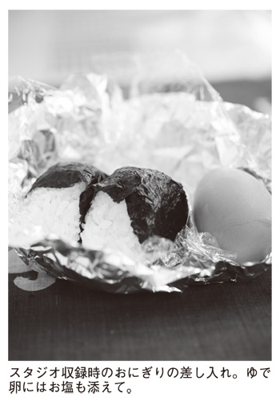
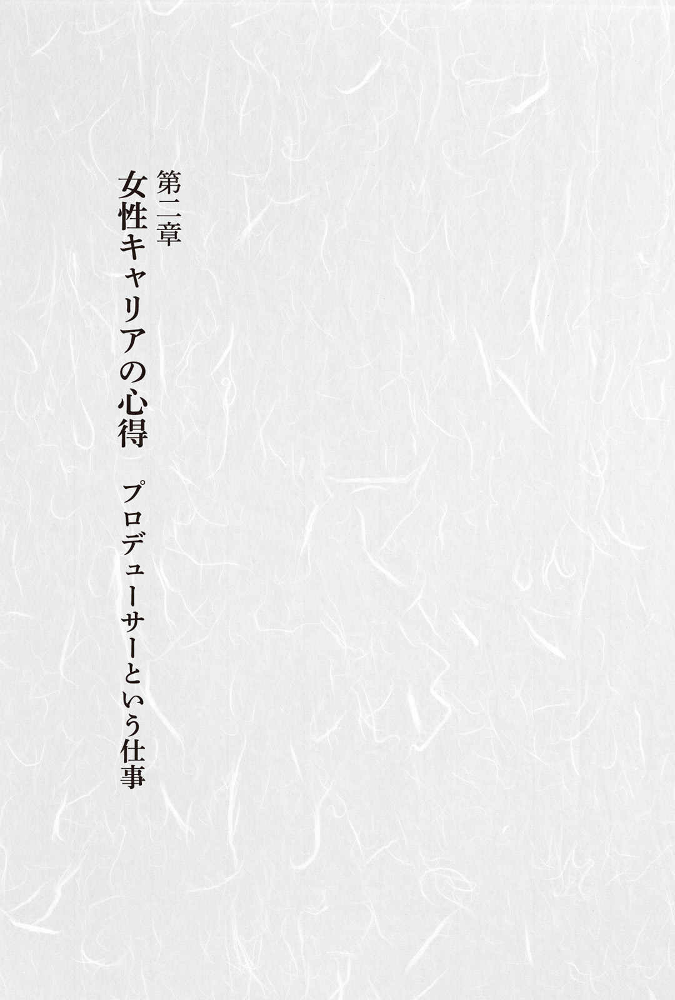
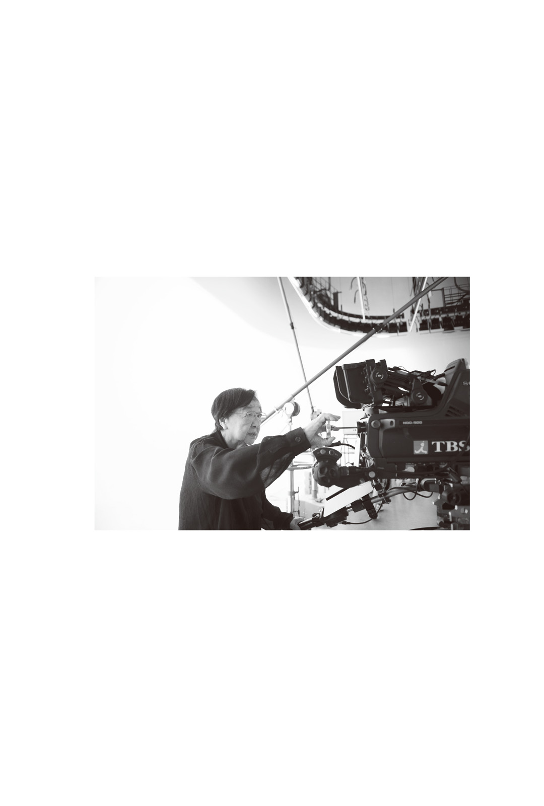

| あせらず、おこらず、あきらめず (単行本) | |
| 石井 ふく子 | |
| (2016) | |
あせらず、おこらず、あきらめず
石井ふく子
本作品の全部または一部を無断で複製、転載、配信、送信したり、ホームページ上に転載したりすることを禁止します。また、本作品の内容を無断で改変、改ざん等を行うことも禁止します。
本作品購入時にご承諾いただいた規約により、有償・無償にかかわらず本作品を第三者に譲渡することはできません。
本作品を示すサムネイルなどのイメージ画像は、再ダウンロード時に予告なく変更される場合があります。
本作品の内容は、底本発行時の取材・執筆内容に基づきます。
本作品は縦書きでレイアウトされています。
また、ご覧になるリーディングシステムにより、表示の差が認められることがあります。
廊下という切り替えスイッチ
自宅のある青山のマンションから専属契約を結んでいるＴＢＳまではタクシーで一メーター、気候のいい時なら光や風を感じながら歩いていける距離にあります。そうはいってもＴＢＳのある赤坂はその地名からもわかるように起伏の多い土地柄です。くだり坂となる行きはともかく、一日の仕事を終えてから坂を登って徒歩で帰ることはさすがにもうありません。
このマンションで暮らすようになってずいぶん経ちました。転居のきっかけをつくってくださったのは、女優の奈良岡朋子さんです。奈良岡さんがご自分の引っ越しのために集めていた不動産資料をたまたま目にしたのが、そもそもの始まりでした。奈良岡さんは所属する劇団民藝で重要なポジションにいらっしゃる方ですから、女優としてだけでなく何かとご多忙です。それに地方公演で東京を留守になさることも多いため、彼女の代わりに私がモデルルームを見に行くことになったのです。
そうしたら私自身が一目でその部屋を気に入ってしまって......。一番の理由は短いながらも廊下があることでした。「廊下なんて無駄なスペース。その分だけ部屋が広い方がいい」とおっしゃる方もいらっしゃいますが、昔ながらの日本家屋で育ったせいか、私はある部屋に行くために別の部屋を通らなければならないという間取りが好きではないのです。
ひとり暮らしですから、部屋数はそんなにいりません。リビング、寝室、仕事や勉強をする部屋、納戸、それだけあれば十分です。そしてどの部屋にもそれぞれ目的や用途に則した「顔」、つまり特性があります。自分にとって大切なのはそれぞれの特性が保たれていることで、そのために大きな役割を果たすのが廊下なのです。
廊下によってそれらが区切られて独立したスペースを形成していれば、部屋に入った時に自然と気持ちが切り替わります。そうすれば仕事にも集中できますし、寝室ではゆっくりくつろげます。
またこうして部屋それぞれの「顔」を大切にするようにしていれば、リビングが書類でいっぱいになるようなこともありません。気持ちを切り替えすっきりさせることで家のなかも片付く、一石二鳥ではありませんか。
廊下に一目惚れしたマンションは、自分にとって理想的な間取り。そこで思い立ったら即行動。気がついたら奈良岡さんより先に契約を済ませていたのでした。
リビングにごみ箱は置きません
リビングの窓が広く、部屋が明るいのも今住んでいるマンションを気に入った大きな理由でした。窓からは東京タワーが見え、眼下には普段行き来している都市の街並みが広がっています。引っ越した頃に比べると、高層建築物が増えて見晴らしはずいぶん変わりましたが、それでも高層階の窓からはどこまでも広がる空を眺めることができ、ゆったりとした気分を味わえます。
せっかく広々と清々しい空が望めるリビングなのですから、そこにはなるべく物を置かないようにしています。ダイニングテーブルの他にあるのは、壁際の飾り棚と広い窓に沿って低く設えた棚。そして仕事と切っても切り離せないテレビ。そうはいっても、実際にリビングでテレビを見るという習慣はあまりないのですけれど。
以前はソファもあったのですが、あまり使っていないことに気づき処分してしまいました。そうすると部屋の真ん中にぽっかりと、ちょっとした踊りの稽古ができるくらいの空間ができました。清々してこういうのもいいものだな、と気に入っています。
他に特徴的なことがあるとすれば、リビングにごみ箱がないことでしょうか。とにかくなるべくものがないすっきりした状態が好きな私は、テーブルの上にも何も乗っていないのが好きなのです。だから必然的に不要なものはすぐごみ箱へ捨てることになります。
捨てたら捨てたで、今度はごみ箱のなかにごみが入っているのが気になってしまいます。落ち着かないので、ごみ箱のごみを捨てるために台所へ行く。気がつくとリビングと台所とを行ったり来たり。だったら最初から台所へ捨てにいくのも同じことです。
また、リビングはお客様を迎えるところでもあり、自分ひとりだけの空間ではありません。そういう場所にごみ箱を置いておくというのもどうなのかな、という思いもあり、いつの頃からかごみ箱を置かないようになったのでした。
少し変わっていると思われる方もいらっしゃるかもしれませんが、自分にとってはそれが快適。なんとなくみんながそうしているから、という理由で人に合わせる必要はないと思うのです。日々をすっきりした気分で過ごすには、そんなちょっとしたことにヒントがあるのかもしれません。
一日の始まりは父母への挨拶から
朝はいつも六時半に起きています。現在、スタジオ撮りがない時はＴＢＳへはお昼頃に出社します。テレビ局の制作部は、総務や営業などの部署に比べて始業開始が遅いので、すぐ近くの会社へ行くのにそんなに早く起きる必要はないのですが、これはＴＢＳに転職する前に身についてしまった習慣です。
朝起きて最初にするのは仏壇にお水とお茶を供えること。まずそれをしてからでないと、水もお茶も飲む気にはなれません。これもまたいつしか身についてしまった毎日の習慣です。
仏壇といっても小さなお厨子です。ある時、仏壇屋さんで見つけて気に入ったものです。広いお屋敷に住んでいるのでもなければ、人を呼んで自宅で法事をするようなこともありません。ですから、昔ながらの立派な仏壇は今の暮らしにそぐいません。
こうしたことで大切なのは気持ち。毎日ちゃんと手を合わせて供養することが大切なので、仏壇の大小は関係ないように思っています。どんなに仏壇が立派だったとしても、めったに手を合わせないのであれば本末転倒、まったく意味がありません。
小さな仏壇に向かって「今日もよろしくお願いします」と話しかけると、不思議なもので父と母が「わかったよ」と言ってくれているような気がしてくるものです。そうやって実際にはもう会うことのない両親に励まされ、活力をもらって一日が始まるのです。
素材にこだわる朝ご飯
朝食は白いご飯にお味噌汁、鮭や海苔、佃煮といった〝昔ながらの日本の朝ご飯〟が好きです。それは朝に限ったことでなく、昼食や夕食だとしても大歓迎のメニューなのです。
今はスーパーやコンビニで何でも売っていますが、どうしても出来合いのお総菜を買う気にはなれません。インスタント食品を食べることもありません。そうしたものがない時代に育ったせいか、なんとなく馴染めないままこれまで過ごして来ました。
最初からそういうものがある生活をしていたら不便に感じるのかもしれませんが、昔の人はインスタントなどに頼らずにやっていたのですし、幸か不幸かその便利さを実感することなくこれまで来てしまった自分にとっては、まったく不要なものなのです。
やっぱり食材にこだわり、その時の必要に応じてつくったもののおいしさに勝るものはありません。海苔ひとつとっても、上等なものはまず香りが違います。値段は張りますが、食感、味すべてにおいて安く売られている品とは比べものになりません。口にした時に「おいしい」と心から感じられること、そういうひとときを持つことが大切なのではないでしょうか。たとえメニューは質素でも、贅沢すべきところは贅沢をする。これは食事に限ったことではなく、さまざまなことに当てはまるかもしれません。
また高品質の海苔はミネラルやカルシウムが豊富で、私のような年配の女性が積極的に摂取すべき栄養が含まれています。つまり健康にもいい。健康だからこそ、元気でいられ、元気だからこそ、こうして今も仕事ができるのです。
朝食後は新聞に目を通したり、仕事の資料や台本を読んだり。電話もよくかかってきます。こうしてちょこちょこと用事を済ませているうちに、出勤の時間はあっという間にやってきます。
チータ米でおにぎり
お米はありがたいことにいろいろな方が送ってくださるのですが、そのひとりがチータ。つまり水前寺清子さんです。歌手としてたいへんな売れっ子だったチータに、どうしてもドラマの主役をお願いしたくて、相当な無理を言って主演していただいた『ありがとう』の第一作が放送されたのは昭和四十五年。もうずいぶん月日が経ちました。そのいきさつについては、改めて触れますが、こんなにも長いお付き合いになるとは当時は思いもしませんでした。
皆さんのおかげで、我が家にはいつもひとりでは食べきれないほどのお米があります。なので、同じマンションに暮らす奈良岡さんや私のドラマに出演してくださる俳優さんに、スタジオ収録の折におにぎりの差し入れをすることもよくあります。
おにぎりは小ぶりの丸形。あまり硬く握るとおいしくないので、口に含んだ時にご飯粒がぽろっと広がるくらいが目安です。おにぎり二個をアルミホイルで包んで、ゆで卵を添え、冷凍保存などの際に使うビニール袋に入れればひとり分の完成です。

〝同じ屋根の下〟で暮らす奈良岡さんの場合は、おにぎりではなく炊いたご飯に梅干しを入れ、生卵をつけてお渡しすることもあります。お好きな時にご飯をレンジで温めれば、卵かけごはんの出来上がりです。
その〝出前〟の方法は至って簡単、おにぎりやご飯を入れた袋を奈良岡さんの玄関のドアノブにかけるだけです。あちらにはあちらの、そしてこちらにもこちらの都合がありますから、それが一番合理的。
直に会って手渡して、世間話のひとつもした方が楽しいという方もいらっしゃるでしょうが、そうした関係はどうやら私たちの性には合わないようです。当人たちにとってはこの方がずっと気が楽。だったらそうするのが一番、ということなのです。
ほどよい距離感でいい関係～奈良岡朋子さんの話
石井さんとのつきあいはもう五十年以上で、同じマンションに暮らすようになって二十年になります。自宅を建て直すことになった私が仮住まいを探していた頃、石井さんもそれまで住んでいたところに飽きたなんて話をしていたんです。それでたまたま見かけた物件を教えたら、行動の早い石井さんはすぐにモデルルームを見に行かれて。
さっそく手付け金を打ったというので私も見に行きました。部屋も気に入りましたし、何しろ地の利がいいんです。地下鉄の駅から歩いてすぐで、近くには郵便局も病院も区役所もあります。八十歳を過ぎたら車の運転をやめようと思っていましたのでうってつけだと思い、即座に私も契約しました。
セキュリティーがしっかりしているのも大きな決め手でした。二重のオートロックの上にフロントは交代で二十四時間いつも人がいて、管理会社の方が皆さん親切なんです。電球ひとつ切れたなんて時もすぐに飛んで来て交換してくださる。仮住まいのつもりだったのが、そのまま住み続けることになりました。
私は元来あまりものを食べない人間で、劇団の仕事で家を不在にすることが多いため、家に食材を蓄えるという習慣がありません。ですので、いただいたお米などを石井さんに預けてしまうこともよくあります。だからというわけではないのでしょうが、石井さんは時々〝えさ〟を届けてくれます（笑）。在宅を確認して私の部屋のドアノブにおにぎりやご飯の入った袋をぶら下げておいてくれるのです。
私は人とべったりつきあうのが苦手な上に、この仕事というのは自分の時間を大事にしないとやっていけないところがあります。石井さんはそうしたことを言わないでもわかっている方。だからお互いにそれぞれの暮らしには立ち入らず、なんとなくお互いを気にかけているという感じでしょうか。ちょっと具合がよくないなんて時も、病院が同じだと情報が伝わりますので「どおお？」なんて感じで電話をかけ合ったりして。
干渉しない程度に気を遣い合う、信頼できる親しい友人。それは家族とも親戚とも違う存在で、そういう人が同じマンションに住んでいるという環境はなかなかいいものです。とにかくお互いに身体さえ元気でいられれば、と思っています。
上戸彩と卵焼き
ドラマを収録しているＴＢＳ緑山スタジオは、都心から離れたところにあります。その日のスケジュールによっては朝早くにスタジオに入らなければならないこともあり、俳優さんはとても早起きをしなければなりません。そのため朝ご飯を食べずにいらっしゃる方も少なくありません。
けれど、お腹を空かせたまま現場に臨んだのでは、役に集中できません。だからといってわざわざ食堂や喫茶店に行って食事するのも面倒、というような時に食べてもらえればと思って始めたのがおにぎりの差し入れでした。おにぎりの具材はその時によってさまざまですが、多いのはやっぱり鮭やたらこと梅干しで、それらも素材にはこだわっています。
また時にはお弁当をつくっていくこともあります。お弁当のおかずの常連が卵焼きで、それをすっかり気に入ってくれたのが上戸彩です。気に入っただけでは済まず、つくりかたを教えてほしいとわざわざ私のマンションまで訪ねてきたことがありました。
特にどうということもない、ごく普通の卵焼きなのですけれど。お塩とお砂糖、それにほんの少しお酒を入れて、卵焼き用の四角いフライパンで火加減に気をつけながら少しずつ卵を流し込んで丁寧に焼いていくだけ。味付けも作業も簡単ですが、簡単だからこそちょっとした加減で成功もすれば失敗もする。ベテラン主婦の皆さんはよくご存知のことと思います。
上手に焼けるようになるには、数を重ねて経験を積む以外に近道はありません。簡単だからこそ、それを極めるのは決してたやすくはない。往々にして世の中にはあることです。
さて、我が家の台所で一生懸命になって卵を焼いていた彼女も、今ではＨＩＲＯさんという素敵な伴侶を得て一児の母親です。お子さんが幼稚園に通うようになれば、お弁当づくりは毎日の仕事。
運動会や遠足など、卵焼きをつくる機会はこれからどんどん増えるでしょう。そんな家族の思い出の風景や一家だんらんのひとときに、私のところで習い覚えた卵焼きが少しでも役に立っているのだとしたら、こんなに嬉しいことはありません。
ひばりさんとかぼちゃ
今は世界中のさまざまな食材が手に入りますし、レストランのメニューにも世界各国の料理が並んでいます。美食家の皆さんはそれを楽しまれていることでしょうけれど、私はどうも苦手です。
やっぱり和食が好きです。それも料亭で出されるような高価なものではなく、ごく普通の家庭料理。調味料は「さしすせそ」、昔から日本にあるものだけで十分です。刺激物、特に辛いものは苦手で、ごく普通のご家庭でつくるようなカレーライスですら好みではありません。芸者をしていた母がいつも忙しくしていたため、幼い頃から祖父母に育てられたことも影響しているのでしょう。
食べものの好き嫌いは多く、嫌いなものを挙げていったら切りがないほどです。年齢と共に味覚の好みは変わるとか、品種改良や調理の方法によって味は異なるとかおっしゃる方もいらっしゃいますが、どんなに勧められても嫌いなものを口にする気にはなれません。そんな私ですが、一度だけ例外がありました。
ある日、玄関の呼び鈴が鳴ったのでドアのほうに行くと「加藤です」という声。どこの加藤さんかしらと思いながらドアを開けてみると、立っていたのは加藤和枝さん。つまり美空ひばりさんでした。
特に約束をしていたわけでもなかったので少々驚きながら家に招き入れると、ひばりさんは「はい、お土産」と言って、手にしていた包みを私にくださるのです。開けてみるとそれはひばりさん手づくりのお弁当。突然のことでわけもわからないでいる私に、ひばりさんはただただ食べるようにと勧めます。
困りました。
なぜならおかずに大嫌いなかぼちゃが入っていたからです。それもたっぷりと！
かぼちゃの何が嫌いかというとまず色。かぼちゃを半分に割った時の、あの鮮やかな黄色。そこに同じ色をした種がぎっしり詰まっている、あの感じ。その見た目の印象がどうにも苦手で食べる気になれないのです。
かぼちゃに困惑してしばらくの間ためらっていたのですが、ひばりさんは一歩も引きません。そばに座って動かないところをみると、口に入れるまで待つつもりなのでしょう。
困ったなあ......。食べないと怒るだろうなあ。
しかたなく降参することにしました。そして恐る恐る箸をつけました。
そうしたら......。
美味しかったんです。私の様子にひばりさんは満足そうな表情です。
私の偏食は食べず嫌いが多く、このようにイメージに左右されやすいのです。他に例を挙げるなら茄子。その理由は形からネズミを連想するから。こんな話をすると、皆さんお笑いになりますが、笑われても何でも嫌なものは嫌。
かぼちゃはひばりさんのおかげで食べられるようになりましたが、これは例外中の例外なのです。なぜあの時、ひばりさんがかぼちゃの入ったお弁当を持って訪ねていらしたのか、今となっては知る由もありません。ただ時折、そのことをふっと思い出します。
モノ語り
石井家の玄関を入ると、短い廊下の先にリビングがある。家具らしい家具はダイニングテーブルと椅子のセット、それに飾り棚がふたつあるだけだ。玄関に飾られた古色を帯びた絵馬といい、リビングの壁に掛けられた前田青邨の絵といい、全体にすっきりと洒脱な印象の部屋にあって、何とも愛らしい雰囲気を醸し出しているものがあった。
「縫いぐるみを飾る趣味はないんですけど、これはひばりさんからいただいたものなので」と、石井さん。
小さな白い犬の縫いぐるみは東京タワーが一望できる窓を背に、リビングの中央を向いて籠にちょこんと収まっていた。この縫いぐるみが鎮座する棚の上には、さまざまな方からいただいた品々が並んでいる。
華やかなプリザーブドフラワーは京マチ子さん、石坂浩二さんは芸術的センスが光る時計。佐良直美さんはカンガルー、向田邦子さんは猫の置物。哀愁漂う陶製の大きなピエロは大原麗子さんからだという。
ダイニングセットも大原さんのお見立てで、ふたり連れだってお店へ出かけ大原さんが選んでくださったのだそうだ。
ダイニングセットの椅子に壁を背にして腰かけると、正面の壁際に置かれたもうひとつの飾り棚と向き合う。棚の上で目を引くのは和服姿の少女の人形だ。
「ちょっとおしんに感じが似てますでしょ？ 橋田（壽賀子）さんのお誕生日祝いに贈ったものです。だけど、橋田さんにはこの人形が寂しそうな顔に見えるらしくそれが気にかかる様子だったので、うちで引き取ることにしたんです」。
重そうに手桶を下げていたり掃除中にたすきを直していたり、風呂敷包みを大事そうに抱えているのはおつかいの途中だろうか。少女の日常がありありと目に浮かぶ人形は与 勇 輝 氏作の作品。
石井家のリビングを彩っている品々には、それぞれに風情と温もりがある。そしてそれらのほとんどは誰かが誰かのために贈ったもの。ひとつひとつの品に込められた思いに、人と人をつなぐ物語がある。
初春は女優さんに囲まれて
奈良岡朋子さんが同じマンションで暮らしていることはすでにお話ししましたが、実は京マチ子さんと若尾文子さんも同じ屋根の下のお仲間なのです。そしてここ数年は、お正月に文字通りみんなで集まるのが恒例となりました。
マンションが建った当時から住んでいるのが奈良岡さんと私で、それから少し経って京マチ子さんが越していらっしゃいました。さらに数年前に越していらしたのが若尾さんです。
若尾さんのご主人は皆さんご存知のように日本を代表する建築家の黒川紀章さんですが、残念ながら他界されてしまいました。住まいに関しては思い入れもひとしおであろうご主人。その黒川さんが残された家には、夫婦の思い出がたくさん詰まっていることでしょう。また何より住み慣れたゆえの居心地のよさもあると思います。
その反面、ひとりで暮らすには広すぎるのも事実。物騒な世の中を思えば女性には治安面での不安もあります。最近はご夫婦ともに健在でもお子さんが独立された後に、一軒家からマンションに住み替える人も多いと聞きます。これは非常に合理的な考えだと思います。
家は手入れしなければ傷むもの。長く住んでいれば経年劣化による損傷の修繕が必要となりますが、若い時には何でもなかったちょっとした作業が、大きな負担になることもあるでしょう。
その点、管理の行き届いたマンションならそのような細々したことに煩わされずに済みますし、警備もしっかりしていますから安心です。若尾さんがどのような思いをめぐらしマンション暮らしを決意されたのか、その心の奥底はご本人にしかわかりませんけれど、夫亡き後の妻の生き方としてひとつの道を示しているのではないでしょうか。
ともあれ、若尾さんは私たちと同じマンションの住人となり、仕事を通じてお互いによく知っている者同士がご近所さんとなりました。だからといって、お互いに年中行き来しているわけではありません。
それでも同じ世界でそれぞれに一生懸命やってきた仲間がそばにいるというのは、やはり心強いものです。
普段はお互いに干渉し合わない私たちですが、せっかくご縁あってそばに暮らしているのですから、お正月くらいはみんなで集まってお祝いしましょう、ということになったのでした。
元日の昼間、我が家のリビングに顔を揃えるのは、日本を代表する素敵な女優さんたち。その華やかな雰囲気のなかで、また新たな年を迎えられた喜びをわかち合います。
毎日がウイークデー
一年の始まりである元日くらいはこんなふうにゆったりと過ごしますが、普段はそうはいきません。プロデューサーという仕事に、出勤時間やカレンダーは関係ないのです。さまざまな確認事項や変更の連絡、問い合わせや打診、相談事など、家にいても頻繁に電話がかかってきます。
また気になってこちらからかけることもあります。眠る時も携帯電話の電源を切ったことはなく、必ず枕元に置いています。それから日曜日に打合せが入ることもめずらしくありません。
それでは気が休まらなくて大変でしょう？ と気遣ってくださる方もいらっしゃいますが、自分では大変だと思ったことは一度もないのです。
時間や曜日は関係ないとはいうものの、月曜日以降でも間に合う用事であれば何もわざわざ日曜日に連絡をしてくる人はいません。となると、それは落ち着いてじっくり取り組みたい仕事がある時などにはかえって好都合。例えば作家との打合せなどは、敢えて日曜日にすることもあります。
また、急を要する問題が起きた時に曜日や時間を気にして報告を先延ばしにした結果、事態が悪化してしまうことだってあり得ます。それを思えば、どんなに夜中の電話であってもちゃんと連絡してくださる方がありがたいのです。
目的は視聴者の皆さんに喜んでいただけるドラマをみんなで制作すること。そのためにどうすれば合理的に仕事を進められるか考え、実行するのがプロデューサーの仕事です。自分にとっての最優先事項をはっきりと自覚していれば、この程度は取るに足らないことなのではないでしょうか。
年は〝取る〟もの
ＴＢＳに入社して五十年以上が経過しました。やりたいことをやり続けて来たら、いつの間にか定年の年をとっくに過ぎていたというのが今の正直な実感です。
つくりたいドラマはまだまだたくさんあります。年に一本のペースで制作している水谷豊さん主演の『居酒屋もへじ』はこれからも続けていきたいですし、長いこと皆さんにご支持いただいている『渡る世間は鬼ばかり』も登場人物たちの今後を見守りたい。温めている新たな企画もいくつかあります。
また舞台演出の仕事も、新作あり再演ありで三年先まで予定が入っています。
自分自身の気持ちとしては、仕事をし始めた頃も今もまったく変わるところはありません。長く仕事を続けているとどうしても年齢をクローズアップされがちですが、年は関係ないように思います。年齢を重ねることを「年を取る」という言い方をしますが、文字通り年は〝取る〟ものとして私は誕生日がくるたびに若返るくらいの気持ちでいます。若くいられればまだまだたくさんあるやりたいことを、この先もずっとやり続けることができます。
実際にはまもなく卒寿、けれどそれを意識することなく仕事で忙しい毎日を送れることを心からありがたく思います。

仕事を持つということ
なんだかわからないけれどこの仕事に就いてしまった。
無責任に聞こえるかもしれませんが、それが正直な実感です。
私が社会に出た頃はまだまだ女性が働ける場は限られ、テレビもなかった時代。プロデューサーなどという言葉も存在せず、そういう仕事があることすら知りませんでした。
それ以前の問題として当時は戦中戦後の混乱期。個人の意思ではどうすることもできない時代の波のなかで、さまざまな人に出会い、巡り巡って今の職業に就いたのでした。
日々を過ごしていくなかで、自分の思い描いた夢と現実があまりにかけ離れていて落胆したり、あるいは自分が何をやりたいのかがわからなくて漠然とした不安にさいなまれたりすることもあると思います。けれどそれは誰にでも起こり得ることで、古今東西いつの時代も同じなのではないでしょうか。
そしてそれを乗り越えるためのきっかけやヒントは、思いがけないところに転がっていることもあるようです。幸せなことに、私はそうした機会に恵まれました。そしてそのたびに自分のなかの正直な気持ちと向き合って考え、結論を出してきた先に今の自分があるのです。
芸者をしていた母の背中を見て育ったせいでしょうか。いつの頃からか、自分も仕事を持ちたいと思うようになっていました。そんな私に母は「やりたいことをやりなさい」と言って、自分の願望を押しつけるようなことはしませんでした。
小さい頃の夢は踊りの師匠。三歳の時から習い始めた日本舞踊にのめり込み、稽古場に通ううちに自分も踊りで身を立てたいと思うようになったのです。ですが小学校を卒業して一年ほど経った頃、十三歳の時に肺結核を患い、あきらめざるを得なくなりました。
入院と自宅療養で一年半。学校は二年遅れることとなってしまいました。そして大正十五年生まれの私が女学校に通うようになると、戦争は日増しに激化していきました。
勤労動員で勉強どころではなく三月十日の東京大空襲では家を失い、知り合いのつてを頼って山形に疎開することに。そこで慣れない山形弁に戸惑いながら代用教員や役場の職員として働くうちに、終戦を迎えたのでした。
忘れられないご恩
戦争が終わってやっと東京に帰れることになったものの住む家はなく、親戚や知り合いの家を転々とする日々を送っていました。そんな時に手を差し伸べてくださったのが、長谷川一夫先生です。母の結婚相手、つまり私の父となった新派俳優の伊志井寛と長谷川先生は非常に親しい間柄にあり、私たち家族は先生の家の離れに住まわせていただくことになりました。
私は両親ではなく先生の姪御さん姉妹と三人で、六畳の部屋で寝起きするようになりました。姪御さんのひとりが後に船越英二さんと結婚することになる長谷川裕見子さん、つまり船越英一郎さんのお母さんです。
裕見子さんは女優のお仕事でギャラをいただくと、いつもきれいに三等分して私とバレエをなさっていた妹さんにお小遣いだとおっしゃって分けてくださいました。決して裕福だったわけではありません。なのに、必ずそうしてくださったのです。
そのお気持ちがありがたく、自分も早く仕事を見つけて裕見子さんに恩返しがしたいと思うようになりました。そうはいうものの、女性が働ける場など今とは比べものにならないほど限られていた時代。そう簡単には見つかりません。
そんな時に長谷川先生が新東宝のニューフェイスを受けるように勧めてくださったのです。女優になりたいなどと考えたこともありませんし、受けたところで受かるとも思いませんでした。
ですが、もし合格すれば経済的に自立することができます。先生のせっかくのご厚意でもありますし、その言葉に従うことにしました。
病は医者が、病気は自分で治す
結果は合格でした。そして長谷川先生や大河内傳次郎さんの時代劇に出していただいたり、主演の原節子さんに優しくしていただいたりしながらいくつかの映画に出演しました。少し後輩の香川京子さんとはとても仲がよく、私が新東宝を辞めてからも一緒に旅行をするなど親しくお付き合いをしていました。
人に恵まれたおかげで新東宝時代の楽しい思い出はいくつもあります。ですがもともと女優を目指していたのではありませんから、この世界に憧れて入った人のような夢は持てずにいました。ただ黙々とすべきことをする日々。次第にさまざまな要因が重なり、新東宝に籍を置くことに対して疑問を抱くようになっていきました。
そうこうするうちにまた胸を患い、半年ほど休養することになってしまったのです。それはこれからどうすべきかを考えるいいきっかけでもありました。病気を悲観したところで何の解決にもなりません。
少女時代に肺結核で入院した時に私はそれを学びました。やりたいことをやるためにはまず健康でなければいけない。そして入院中の患者が最優先させなければいけないのは、健康を取り戻すことです。子供心に決意したのはお医者様のおっしゃることは絶対に守る！ ということでした。
以来、私は健康管理に関してはかなり気を遣っています。特に身体の不調を感じなくても、一カ月に一度は病院に行って先生に診ていただいています。そうするといつもとどう違うのか、些細な変化にも敏感になります。普段の〝いい状態〟がわかっているからこそ、〝悪い状態〟にも気づくことができるのです。
そしてその感覚は心が健康でないと鈍くなります。
かかりつけの先生が「病は医者が治しますが、病気を治すのはあなたご自身です」とおっしゃるのを聞き、まさしくその通りだと思いました。
病気の気は自分次第。
心も身体も健康であることはすべての基本です。
スポンサーからプロデューサーへ
新東宝を辞めた私は、しばらくして新聞で日本電建という会社が求人広告を出しているのを見つけました。その頃には戦後の復興が進んで世の中も安定し、女性が働ける場もほんの少しずつですが増えていたのです。
日本電建は建売住宅の会社で、入社してしばらくすると宣伝部に配属されることになりました。そしてＴＢＳの前身であるラジオ東京で日本電建提供のラジオドラマを制作することになったのです。
それが私とドラマの出会いでした。日本電建提供のドラマは『人情夜話』というタイトルで、放送は月曜日から金曜日の夜、十五分間の帯番組でした。
私の仕事はスポンサー側の人間としてスタジオ収録に立ち会うこと。やがて回を重ねるごとに局のスタッフと親しくなり、担当プロデューサーと企画について話すようになっていきました。また父を通じて新派の俳優さんと付き合いがあったため、キャスティングに関わることもありました。
何もないところから一本のドラマが出来上がっていく過程を間近に見られるのはこれまでにない体験で、ここでドラマづくりの面白さを知ったのです。
やがてラジオ東京は東京放送（ＴＢＳ）と社名を変え、テレビの放送を開始しました。そんなある日、東芝日曜劇場のスタッフとして局に入らないかというお誘いを受けたのです。
東芝日曜劇場というのは後にＴＢＳの看板番組となる、東芝の一社提供による一時間番組で一話完結を原則に放送していたドラマ枠のことです。
あまりに唐突なことでした。お世話になっている日本電建を辞めて転職するなど考えられません。放送開始したばかりのテレビがどういうものなのかもわかりませんし、そこで果たして自分に何ができるのかなんて見当もつきません。
ですから最初はお断りしました。ところが当時の編成局長と日本電建の社長とが話し合った結果、私は日本電建の社員として働きながら、日曜劇場の仕事もすることになったのです。
要するに二足のわらじ。最終的には自分で決めたことでした。それぞれを両立するのは大変かもしれないけれど、自分を必要としてくれる場があり、ラジオを通して知ったドラマづくりに興味がある。だったらやってみようと思ったのです。
できるかどうかを考えたところでそれがわかるわけではありません。とにかくまずは前へ進まないことには何も始まらないのです。
初めてづくしで原作探し
日曜劇場は一話完結のドラマでしたから、常に新たな企画を考えなければなりません。そういう放送形態のドラマがめずらしくなった今、「よくそんなことを続けられましたね」と言われることがありますが、開局したばかりのテレビでは何もかもが初めてのことばかり。大変だと思う暇もありませんでした。
新たに何かが始まる時というのは得てしてそういうものなのではないでしょうか。余計なことを考えている余裕もなく、一週間などはあっという間に過ぎてしまいます。
プロデューサーとしての仕事はドラマの原作探しから始まります。そこはラジオでやっていたことと同じです。文芸誌を読みあさり、時には出版社にかけあって発売前にゲラ刷りの段階で読ませていただくこともありました。いい作品は他の人も狙っていますから、とにかく先手を打つことが大事なのです。
そうやっていい作品に出会った時の喜びは格別のものがあり、仕事に対する気持ちを高揚させました。ライバルに先を越されないうちにどうしても原作者にドラマ化の許可をいただかなくては！ 思い立ったら即行動。作家のご自宅はもちろん、可能な限りどこにでも飛んで行きました。
作家の先生ご本人に直接会えるのは、とても刺激的で楽しいことでした。いかにもこういう作品をお書きになりそうな方だなと思ったり、自分が抱いていたイメージとまるで違っていてその意外性に驚いたりしながら、何度か通っているうちに先生方も気さくに接してくださるようになりました。
当時の文壇の先生は夏になると皆さん軽井沢に避暑に行かれるので、その滞在先を訪ねていろいろな話をうかがい、帰り際に「先生のこの作品、ください」なんて言っていただいてしまうこともありました。
あきらめない
なかなかお会いすることができずに難儀することもあり、それが山本周五郎先生でした。先生は横浜にある間 門 園 という旅館の離れで執筆なさっていたのですが、そこへ何度電話しても切られてしまうので、直接訪ねて行きました。もちろん簡単には会っていただけません。
門前払いは覚悟の上。そのくらいでがっかりなどはしていられません。毎日行くのもしつこいだろうと、一日おきに通うことにしました。三回通っても玄関の扉は閉ざされたまま。それでもあきらめずに訪ねて行ったらとうとう四回目に、急にガラッという音がしたのです。そして目の前には先生ご本人が。
そして「入れ」という先生の声がしました。
ついに第一関門突破です。
さて部屋に入ることはできたものの、どこにいればいいのかわかりません。隅の方でもじもじしていると「何か飲むか」と聞かれました。そして「うちには酒と水しかない。どっちだ？」と。
とっさに「お酒は飲めませんから水がいいです」と答えると、今度は「そこに水道があるから自分で汲んで飲め」。言われた通りにすると、喉がカラカラに渇いていたことに気づきました。
これが周五郎先生との出会いです。
この時に先生が何をお思いになったのかはわかりませんけれども、無事にドラマ化の許可をいただくことができました。それが『こんち午の日』で、その後も先生はいろいろな作品をご提供くださいました。
たまたま四回目で先生は会ってくださいましたが、それが何回になろうと私は通い続けるつもりでした。しつこいと非難されようと何だろうと許可をいただくまで絶対にあきらめたくありませんでした。
なぜあきらめないかといえば、それだけその作品に惚れ込んでしまったから。
逆に簡単にあきらめられるくらいの、その程度の熱意しか持てないのにお願いに上がるのでは、却って失礼なのではないでしょうか。少々勝手な理屈かもしれませんがそんな気もしています。
信じて突き進む
日本電建とＴＢＳとの〝二足のわらじ生活〟は三年ほど続き、どちらの会社にも迷惑をかけてはいけないと、がむしゃらに働き続けました。けれど、さすがに限界はあります。
昭和三十六年、もはや私の人生になくてはならないものになっていたドラマづくりに専念するため、日本電建を退社しＴＢＳの社員となりました。
三十五歳の時です。
それからは日曜劇場だけでなく連続ドラマも手がけるようになりました。単発であろうと連続であろうと、ドラマづくりで大切なのは企画とホン、つまり脚本です。
原作のある作品をドラマ化する場合、ファースト・シーンをどうするかはとても重要です。原作とは違う導入を考え、それを原作の世界にどう溶け込ませるか。すべて原作通りの展開で進めていけばいいというものではないのです。そこには放送枠という時間的制限もあり、民放の場合はコマーシャルを入れるところも考えなければなりません。
ドラマとしてお見せするためにはどうすれば効果的かを考え、自信を持ってやったことでも、周五郎先生から「勝手にやって！」と叱られることもありました。でも文字には文字の、映像には映像のよさがあるはずです。そんな時は先生の言葉に萎縮することなく、自分の考えをはっきりと申し上げました。
そうすると先生も結局は納得してくださいました。そんなことを繰り返しながら原作者とドラマのプロデューサーというお付き合いを続けることができたのです。
頭を柔らかく
オリジナル脚本の場合は物語設定を考えなければなりませんが、そのヒントは日常の些細なところに転がっていることもあります。例えば『肝っ玉かあさん』。これは雨が降ると買い物に行く主婦の出足が鈍り、蕎麦屋が出前で繁盛するという話を耳にして思いついたドラマでした。
放送は毎週木曜日の夜八時。単発の日曜劇場では歌舞伎や新派の名だたる名優さんにご出演いただきましたが、連続ドラマではそういうわけにはいきません。スケジュールに加えて予算は大きな問題です。
そして企画とほぼ同時に頭に浮かんだのが京塚昌子さんの主演でした。新派の脇役として活躍していた京塚さんのことは父を通じてよく知っていて、私の方が年上であるにもかかわらずママと呼んでいる間柄でした。
そこでさっそく「ママ、テレビで主役やらない？」と持ちかけたのです。本人は尻込みしていたのですが、最終的には引き受けてくれることになりました。ママのふくよかなイメージそのままにタイトルは『肝っ玉かあさん』で決定。脚本は日曜劇場で何度も仕事をしている平岩弓枝さんにお願いしました。
そして木曜日の夜になると、佐良直美さんの歌う元気な主題歌がお茶の間に流れるようになったのです。昭和四十三年に放送開始したこのドラマは高視聴率を記録し、ありがたいことに多くの視聴者の皆さんに喜んでいただくことができました。
主役は主役、脇役は脇役という考えが強かった時代のことです。それにこだわらないキャスティングが導いた成功でした。
ちょっと頭を柔らかくして考えてみると発想はどんどん広がっていきます。
『ありがとう』とチータ
『肝っ玉かあさん』のヒットを受けて次に思い立ったドラマが、水前寺清子さん主演の『ありがとう』です。人が人に感謝の気持ちを伝える「ありがとう」という言葉の大切さをドラマで伝えたいと思ったのです。
放送開始は高度経済成長まっただ中の昭和四十五年、アジアで初めての万国博覧会が大阪で開かれた年でした。人々の暮らしは豊かになり、戦中戦後とは雲泥の差。平和で物質的に恵まれた世の中にはなったけれど、逆に心は貧しくなっているのではないだろうか......。そんなことを感じ始めた頃でした。
人と人のつながりが希薄になりつつあるからこそ、感謝の心、「ありがとう」という言葉の重みを、ごく普通の日常のドラマとして描いてみたい。そう思ったのです。
主演はいかにも銀幕のスターといった風情の美人女優ではなく、視聴者の皆さんに親しみを感じてもらえるような、庶民的で明るく元気な人がいい。芝居の技術よりも存在そのものに魅力ある人に演じてもらいたい。
誰かいないだろうか......。
そう考えていた時に、テレビで熱唱する女性歌手の姿が私の目に飛び込んで来ました。
男性のように着物を着流しにして大きな口を開けて元気に歌っていたのはチータ、水前寺清子さんです。彼女しかいない！
その瞬間に決断しました。
思い立ったらじっとなどしていられません。さっそく出演交渉をするため、彼女が所属するクラウンレコードを訪ねました。当時のチータは超がつくほどの売れっ子歌手。ただでさえスケジュールを確保するのはたいへんなのに、拘束時間の長いドラマなんてとんでもない話です。
当然ですが断られました。
けれどどうしてもあきらめきれません。こうなったら本人に直接交渉するしかない。けれどどうやって......。
そして私はある行動に出たのでした。
本気の覚悟でぶつかる
歌番組への出演のためＴＢＳを訪れたチータをトイレの前で待ち伏せしたのです。彼女のマネージャーは男性でしたから、ふたりきりで話をするにはそれしかないと思いました。
そして収録スケジュールを調べて、スタジオから一番近いトイレの前で待ちました。休憩時間になると、本当にチータがやって来ました。彼女がなかに入るのを見届けて私も後に続きます。
個室から出て来るのを待つことにしました。その間、時間にして二、三分くらいのはずなのに私にはそれがとても長く感じられました。
チータが姿を現すとさっそく声をかけ、自分はドラマのプロデューサーで新しい企画を考えていることを伝え、どうしてもそのドラマに主演してほしいと一気にしゃべり立てたのです。
チータが驚いたのは言うまでもありません。表情からそれがありありと見て取れました。もちろんその場でいい返事がいただけるはずもなく、とにかく自分の思いを伝えるだけでその時は終わりました。
そして二度、三度とそんなことを繰り返しているうちに、とうとう三月になってしまいました。番組は四月スタートですから常識で考えたらあきらめざるを得ないところです。けれどもう私は『ありがとう』の主役は彼女以外に考えられなくなっていました。もしチータの出演がかなわないのであれば、企画そのものをやめようと、腹をくくりました。
この時点で別の企画を一から立ち上げるなど無謀ですが、俳優が本業ではない、歌手として超売れっ子のチータをドラマにひっぱり出すのですから、そのくらいの覚悟で臨まなければ申し訳ないではありませんか。
そしてその決意をそのまま彼女にぶつけました。
少し考えた後、彼女はとうとう首を縦に振ってくれたのです。それは得も言われぬ喜びでした。
後で聞いた話ですが、私は夢中でお願いするあまり本人に向かって「美人じゃないからいい」と何度も言っていたそうです。いくら必死だったからといって、何とも失礼極まりない話です。
救われたのは「美人じゃなくていいなら気が楽だと思った」と、チータが言ってくれたことでした。
どうしても彼女じゃなければならないという本気の思いを、その失礼な言葉を含む私の言動から汲み取ってくれた結果でした。決して褒められた話ではありませんが、上っ面の美辞麗句だけでは真意は伝わらないというのも確かなのではないでしょうか。
『忠臣蔵』と戦争で拾った命
ドラマのプロデュースという仕事を続けていくなかで、私はどうしても取り組んでみたいテーマを持つようになりました。それは女性の視点からとらえた『忠臣蔵』です。
赤穂浪士の吉良邸討入り事件は浅野内匠頭への忠臣を尽くした義士の美談としてもてはやされ、江戸時代からさまざまな分野で作品化されてきました。踊りを習い、また六歳の時に母が新派俳優の伊志井寛と結婚するという環境にあった私は、劇場でそうした物語を目にする機会も多々ありました。
とにかく踊りが見たくて劇場に足を運んでいた小さい頃は男の人ばかりの物語に退屈し、成長してからは物語には登場しない赤穂義士の妻や母はどんな思いだったろうと思うようになりました。
一方、絶対にドラマでは扱うまいと決めていたテーマもあります。それは戦争です。そこには自身のある体験が大きく影響しています。
戦争が激化したある日のこと、私は勤労動員で時限爆弾をつくる工場で働いていたのですが、いつものように米軍の空襲に見舞われました。空襲があると学生たちは隊列を組んで防空壕へ入ります。副班長をしていた私の定位置は隊列の先頭なのですが、その日は仕事の関係で私が少し遅れてしまったのです。
そのためいつもは最後尾にいるはずの班長が先頭につきました。私は懸命に追いかけてようやく最後尾に追いついたのですが、列の先頭に近づいてきたのは機銃掃射......。
あっという間の出来事でした。
さっきまで同じ工場で一緒に働いていた友人は帰らぬ人となってしまったのです。それも本来は私がいるべきはずのところにいたがために。
この辛さは言葉では言い表せません。
私のなかの奥深いところに刻まれたこの傷は一生癒えることはないでしょう。
ドラマを通して戦争の恐ろしさを伝えるのは意義のあることだと思いますが、私にはできません。どうがんばってもドラマは現実を超えられない。
ドラマでわかったつもりになっても現実はそんなものではないという思いを、どうしてもぬぐい去ることができないのです。
『女たちの忠臣蔵』に込めた思い
いつか描きたいと思っていたことが絶対にやるまいと決めていたテーマと融合してひとつのドラマが生まれたのは、昭和五十四年に放送された日曜劇場千二百回記念番組でのことでした。
それが『女たちの忠臣蔵』です。
浅野内匠頭に忠義を尽くし艱難辛苦の末に吉良上野介の首を討ち取った四十七士は、本懐を遂げて得も言われぬ達成感を味わったことでしょう。その結果、切腹して果てるのも武士の誉れです。
けれど残された妻や子、母はそのあとどう生きていけばいいのか......。内匠頭の妻、瑤泉院の本心は仇討ちなど望んでいなかったのではないか、そう思いました。なぜなら仇討ちをすれば、多くの女たちが夫を亡くした自分と同じ思いをすることになるからです。
そう考えた時、戦時中に兵士として家族である夫や父、兄、弟を送り出した女性たちの姿が私のなかで重なったのです。愛する者を戦争に送り出す女には大変な覚悟がいります。銃後の女は泣くことも許されず、ただじっと辛抱しなければならないのです。それが戦争の現実です。
それを同時代のドラマとして表現することは自分にはできないけれど、時代劇に置き換えれば描けると思いました。
何とかドラマ化できないだろうかと何人かの作家に相談しました。けれど資料がほとんどない状況も手伝って、なかなか興味を示してくれません。
そんななか、私の話を聞いて「それ、乗った！」と言ってくださったのが橋田壽賀子さんでした。
一行から膨らむ物語もある
橋田さんと打合せをするなかで、赤穂にいるはずの内蔵助の妻りくが江戸に出て来るという構想が固まっていきました。そして妻、恋人、母、姉、妹、それから赤穂浪士とは知らずに出会って恋をした女性。さまざまな立場で浪士に関わる女たちの物語を、江戸のあちこちで描いていくことになりました。
講談本や小説、残された数少ない記録などを読みあさり、エピソードを構想していく過程で、大石瀬左衛門に盲目の姉がいたというたった一行の記述を見つけました。そしてふと思い出したのが、ある歌手のお母さんのことでした。
ずいぶん前にその歌手の楽屋を訪ねたところ、ご本人は出演中でお母さんがいらっしゃいました。お母さんは一心不乱に紙に何かを書き続けています。
何だろうと思って近寄ってみるとそれは娘の名前でした。ちょうど歌っている最中の娘が無事に歌い終われるようにと真心を込めて祈り、その名を繰り返し繰り返し、紙に書き連ねていたのです。
なんという母心でしょうか。
娘さんは命の危険にさらされているような仕事ではありません。けれど我が子の無事をひたすら祈る、母の気持ちはどんな時も同じなのです。
このエピソードをドラマに取り入れることにしました。それが弟を討入りに送り出した姉が見えない目で瀬左衛門の名を書き続けるという場面です。瀬左衛門の姉・つねを演じてくださったのは香川京子さん、香川さんの心のこもった演技のおかげで、感動的なシーンとなりました。
涙を堪えて討入りに送り出す家族、必死に止める恋人、理由もわからず恋人との別れを余儀なくされた娘......。さまざまな年齢、立場の女性たちの物語が、橋田さんのペンの力で次々と立ち上がっていきました。
するとそこで困った問題が生じてしまったのです。
粘りに粘る
日曜劇場の放送枠は一時間。前後編に分けて二時間にしても、物語が膨らみすぎてとうてい時間内に収まりそうになくなってしまったのです。けれど三週間にわたって放送するのでは、たった一夜の出来事を描いたドラマの緊迫感が薄れます。どうしても一気に三時間ドラマとして放送したいと思いました。その気持ちを会社に伝えましたが、前例のない無謀な話です。聞いてもらえるはずがありません。
でもどうしてもやりたい。気持ちはチータの時と同じです。
そして会社員としてしてはならないことですが、スポンサーである東芝さんに直にお願いに行きました。
東芝の担当の方は夢中でしゃべり立てる私の話を聞いた後、しばらくじっと考えていらっしゃいました。そして「人が立ち止まるようなドラマをつくれますか」とおっしゃったのです。
立ち止まる？ 立ち止まるとはどういうことだろう？ よくわからなかったので「わかりません」と答えました。質問されている意味もわからず安請け合いしてどうなるものでもありません。とにかく女性の立場から今までにない『忠臣蔵』のドラマをつくりたいという思いを必死で訴えました。
そして粘りに粘った末に「いいでしょう」というお返事をいただくことができたのです。
長年の夢は実現しました。
無事に放送を終えた時、それを可能にしてくださった東芝さんへの感謝の気持ちでいっぱいになりました。さっそくお礼を申し上げるため、放送翌日はいの一番に東芝さんに伺いました。そしてそこで、ドラマが四十パーセントを超える視聴率だったことを知ったのです。
視聴率と視聴質
視聴率がよかったということは、それだけ多くの皆さんがご覧くださったということです。ですから非常にありがたく思いました。
けれど『女たちの忠臣蔵』が四十パーセントを超える視聴率を記録したと知ったその時、数字そのものに大感激するといったことはありませんでした。数字はやはり数字でしかないからです。
視聴率を一般の企業に置き換えると、営業成績や売り上げということになるかと思います。それらがある程度の水準に保たれていなければ企業として存続していけませんから、もちろん大切にしなければいけないことです。
ただそこで気をつけなければいけないのは、夢中になって取り組んでいるうちに数字を上げること自体が目的であるかのような錯覚に陥ってしまう人もいることです。
数字は結果であって、扱っている商品が買ってくださった人にとって有意義なものであることがまず大前提。どれだけ多くの商品を売るかではなく、どれだけ多くの人に喜んでいただけるかです。
ですから大切にしたいのは視聴率ではなく視聴質。
視聴者の方から「よかった」「面白かった」と思っていただけるような番組をつくることです。だからといって、それは喜んでいただくために媚びるということではありません。
ドラマに託した思いを多くの皆さんにお伝えすることができ、ご覧になった方々の心に何か潤いのようなものを残すことができたら......。
つくり手にとってこんな嬉しいことはありません。
女性として、人として
今でこそ、女性のプロデューサーやディレクターはめずらしくありませんが、私がこの仕事を始めたころは希有な存在でした。
そのためインタビューなどで女性ゆえの苦労を聞かれることがよくあるのですが、特に思い当たることはありません。噓偽りなく思い出せないのです。
もちろん仕事が思うようにいかないことはあります。
けれどその理由として女性だからとは思いませんでした。そういうことを気にしたことがない、といったほうがいいのかもしれません。
仕事をする上で、男も女も性別は関係ないのではないでしょうか。ただそういう意識を自分が持つようになったきっかけはありました。
ＴＢＳの社員として働くようになって少し経ったある日、大きな台風が東京に上陸しました。すると女子社員は帰るようにという社内アナウンスが流れたのです。その放送を聞いて女子社員である私が荷物を持って帰ろうとすると、部長から「え、帰るの？」と聞かれたのです。
ハッとしました。
台風が来ているからといってやるべき仕事がなくなるわけではありません。まさか私が帰ろうとするとは思っていなかった部長は、男性も女性も関係なくひとりのプロデューサーとして私を扱ってくれていたことになります。
なのに自分は女性という立場に甘えようとしていた。それではいけないと思いました。そしてこの時から仕事に対する意識が変わったのです。
要はひとりの人間として何ができるかであって、性別ではありません。
うまくいかないことを性別のせいにしたところで、結果が変わるわけではないのですから。それでどうこう思い悩むなんて精神的にも悪影響ですし、時間も労力ももったいないではありませんか。
そうはいうものの、作品をつくる上では男女双方を意識することは大切です。偏った見方にならないように男性の意見や視点を尊重しなければなりません。そのためにも私がプロデュースするドラマの演出はいつも男性にお願いするようにしています。
性別は気にすべきところとそうでないところと両方があって、まずそれをきちんと見極めることが重要なのではないでしょうか。それがわかれば、本来の目的のために臨機応変に柔軟に対応していけるはずです。
舞台演出のきっかけは父
テレビドラマのプロデュースという仕事を続けて来た私が、舞台の演出をするようになったきっかけをつくってくれたのは父、伊志井寛でした。
ＴＢＳの社員になって七年、四十二歳の時のことでした。当時、父は所属する「劇団新派」の公演で新しい作品の上演を考えていて、その企画を私に考えろと言い出したのです。
「日曜劇場」では、父だけでなく花柳章太郎先生や初代水谷八重子先生を始めとする新派の俳優さんにはずいぶん出演していただきお世話になっています。日頃のご恩に対する感謝の気持ちを込めて、父の意向を受け入れることにしました。企画を考えるだけならテレビも舞台もさほどの大差はないと思ったからです。
そして上演することになったのが、作家の小島政二郎さんとお嬢さんの実話を元にした物語『なつかしい顔─君は今どこにいるの─』でした。
普段からテレビの仕事でご一緒している砂田量爾さんに脚本をお願いしたところ、妻を亡くした初老の男とひとり娘の情愛が細やかに描かれた素敵な物語が出来上がり、これで自分はお役御免だとホッとしていたところ......。
父が急に「お前が演出をしろ」と言い出したのです。さらに父だけでなく、数々の新派作品を手がけていらっしゃる劇作家で演出家の川口松太郎先生まで同じことをおっしゃるのです。
私はテレビでも演出はしていないというのに。
父の言い分は「舞台は小さい時から見ているからできるだろう」というものでした。そう言われても見るのとやるのとでは大違いです。
〝なあなあ〟はＮＧ
まったく経験のない私に「舞台の演出をしろ」と言い出した父は、私が何度「無理だ」と言っても聞き入れてくれませんでした。突然、降って湧いたような話なのに「逃げ腰はいかん」などと言い出す始末です。到底あきらめてくれそうもないことがわかった私は、条件つきで引き受けることにしました。
その条件とは、演出に関して私が言うことは何でも聞くこと。
まずそれがひとつ。仕事として引き受けるからには親子だからといって、親子だからこそ〝なあなあ〟になりたくなかったのです。
仕事の現場に入ったら、父と娘ではなく俳優と演出。舞台という世界での経験は父の足元にも及びませんが、俳優は演出の意図することに従ってもらわなくては困ります。
そしてもうひとつはプロンプターをつけないことです。プロンプターというのは、俳優がせりふを覚えきっていなかったり忘れたりした時に、小声でせりふを教える役目をするスタッフのことをいいます。当たり前のことですが、プロンプターを介してのせりふでは、人物と人物の会話に妙な間 が生まれてしまいます。
しかしながら急な代役、稽古不足、俳優の高齢化などさまざまな理由で、プロンプターつきの上演があの当時は黙認されていたのです。
これも馴れ合いの〝なあなあ〟が招く悪しき習慣です。そのことに対して、私は前々から疑問を抱いていました。ですのでこうして機会をいただき、自分が演出として芝居に関わることになったからには絶対にやめようと思ったのです。
喧嘩もまた懐かしい思い出
稽古場では演出の言うことを聞くこと。プロンプターをつけないこと。
私の出したふたつの条件を父が受け入れてくれたことで、私は舞台の演出という仕事を新たにスタートさせることになりました。
ところが実際に稽古が始まってみると、なかなか約束通りにはいきません。人物の登退場の位置やちょっとした動作を巡って、父と意見が対立することがよくありました。そうしたことはどこの職場にもあることだと思いますが、父の場合はそれ以前の問題でした。
例えば「三歩進んで振り返って、今度は二歩向こうへ行ってください」と言うと、憤慨した様子で「そんなことをお前が決めるな！」という言葉が返ってきてしまうのです。
父は、この世界での経験もない年若の私にそんなふうに指示されるとは思ってもいなかったのでしょう。けれどもそんな私に、演出をしろと言い出した張本人は父です。そしてそこには既存の演出とは違った新しい視点がほしいという意図があったはずです。そのために私は呼ばれたのですから、ここで父に遠慮して言いなりになってしまったのでは、自分がそこに存在する理由がありません。ですから私も負けてはいませんでした。
さまざまな仕事の現場で、与えられたポジションと実年齢や経験が逆転するのはありがちなことだと思います。その結果、何となくやりにくい雰囲気になるのはめずらしくないでしょう。そんな時は何のために自分がそこにいるのか、そして何をすべきなのかという根本を思い出すことです。
演出家は演出をするために、役者は演出の意図に沿って演技をするために稽古場にいるのです。最初は不服そうな様子を見せていた父ではありましたが、そこはやっぱりプロです。芝居をつくるというひとつの同じ目的に向かって、だんだん私の言うことを聞いてくれるようになりました。
稽古場ではずいぶん父と喧嘩もしましたが、それも今となっては懐かしい思い出です。私の初演出作品『なつかしい顔─君は今どこにいるの─』が初日の幕を開けたのは新橋演舞場、昭和四十三年十一月のことでした。
舞台は生の面白さ
舞台演出の仕事をやってみると、テレビのプロデューサーとはまた違った面白さがありました。何より手応えを感じるのは自分が演出した舞台をご覧になっているお客様の様子が直にわかることです。
愉快な場面で心から笑ってくださったり悲しい場面で涙したり、物語や登場人物に感情移入して思わず前のめりになって舞台に見入っている姿を目の当たりにすると嬉しくなり、そしてホッとします。
背もたれに深く寄りかかりあまりにも静かにしていらっしゃると、退屈して眠ってしまわれたのではないかと心配になります。
お金を出して切符を買ってくださりわざわざ劇場までお越しいただいたのですから、お帰りの際にはそれに見合うだけのお返しをして、さらにお土産を差し上げなければ申し訳ないと思うからです。
お客様が日常の憂さを忘れ、ほんのひとときでも楽しい時間を過ごしてくださったら......。そんな思いで毎回取り組んでいるのですが、終演後に満足そうないくつもの笑顔に出会うことができた時、この仕事をして本当によかったと実感します。そしてそれが励みとなって、また次の舞台へのエネルギーとなるのです。
さて、原作の小説とドラマにそれぞれの面白さがあるように、テレビと舞台にもそれぞれのよさがあります。そのよさを生かすためにはテレビにはテレビに、舞台には舞台にあった表現法を見つけていく必要があります。
そして同じ作品をドラマと舞台の両方でお見せすることによって、作品世界はさらに広がっていくこともあるのです。
例えば『女たちの忠臣蔵』。
テレビではたくさんの人に出演していただき、登場人物それぞれのさまざまなエピソードで見せていきました。討入りという、大儀の陰で泣くに泣けない思いをしていた女性たちの生き様を群像劇として描くことで、より多くの視聴者の方にさまざまな立場で共感していただけると思ったからです。
ある浪士のエピソードが進行している間にも、他の場所では別の浪士たちの物語が起こっているという現実を、シーンを細かく分けて描くことで表現していきました。
これは撮影したシーンを編集でつなぎ、映像技術によって場面を次々と切り替えていけるドラマだからこそできたことです。
ところが生の舞台ではそうはいきません。
舞台版『女たちの忠臣蔵』
舞台の場合は人の手を介してセットを飾り、その都度転換していかなければなりません。廻り舞台やセリといった、便利で効果的な舞台機構はありますが、編集済みの映像に比べたら時間も手間もかかる作業であることは間違いありません。
また空間も限られていますから、テレビのような大人数を登場させたら舞台は人で溢れかえってしまいます。そのため大本の物語は同じでも、登場人物を整理して取り上げるエピソードを絞っていく必要がありました。
そこで舞台版『女たちの忠臣蔵』では、五人の女性に焦点を当てることにしました。
まず、大石内蔵助の妻・りく。恋人が赤穂浪士とは知らず、吉良邸の絵図面を渡してしまう大工の娘・しの。夫のために遊女に身を落として金の工面をする間十次郎の妻・りえ。大石瀬左衛門の盲目の姉・つね。そして、浅野内匠頭の未亡人である瑤泉院。
お茶の間と違って、劇場には日常と隔絶された空間が広がっています。お客様はそのひとつの空間のなかで同じ環境のもと、目の前で生身の人間が実際に繰り広げている光景を見つめることとなります。より舞台に集中できる状況で物語の行方を見守るわけですから、自然と想像力が豊かになることでしょう。
その特性を生かして、舞台には舞台にしかできない効果的な演出を考えていった時、私は第一幕の終わりでどうしてもやりたいと思ったことがありました。
静寂と闇、劇場という空間
真っ暗ななか、舞台中央のピンスポットで浮かび上がるのは、討入りが無事成就することを願って水 垢 離 をするりくの姿。そこに討入りを告げる太鼓の音が響きます。それから間を置いて打たれる太鼓の音に合わせ、りくの背後に四人の女たちがひとりずつ、スポットライトで浮かび上がっていくのです。
討入りの夜、女たちもまたそれぞれの人生を背負って別の場所で同じ時を過ごしていたのです。それを言葉で説明するのではなく、視覚や聴覚に訴えて象徴的に見せていく──。
これは劇場というひとつの空間のなかで、同じ静寂と闇、空気感を、演者とお客様が共有しているからこそ効果を発揮します。そこにより写実的な表現が必要とされるテレビとの違いがあります。
扱っている題材は同じであっても、表現方法はさまざま。状況に応じて一番いい有り様を考え、選択していくことが大切なのです。私の場合はテレビと舞台ということになりますが、これはさまざまなケースに当てはまるのではないでしょうか。
ひとつの作品をドラマと舞台と両方で表現することができるというのは、つくり手にとってたいへんな喜びです。舞台演出の仕事は自分から望んで始めたことではありませんでしたが、いつしか自分にとってなくてはならないものになっていきました。
舞台は総体的に美しく
舞台の演出は総体的に美しく、というのが基本です。
例えば平成二十七年のお正月に、明治座で二十六年ぶりに再演した『春日局』。これは橋田壽賀子さんが平成元年にＮＨＫ大河ドラマとして執筆した作品を、舞台化に向けてアレンジしたものです。
徳川家の三代将軍家光の乳母である春日局を高島礼子さん、家光の産みの母であるお江与の方を一路真輝さんが演じてくださいました。
我が子と離れ、乳母としての生涯を全うする春日局と、自分の手で我が子を育てることができないお江与の方。ふたりは反目する間柄ですが、共に母としての複雑な思いを抱き時代に翻弄された女性です。ひとりの息子を巡るそれぞれの母の心理的葛藤が、さまざまな出来事を引き起こしていくのですが、それは紛れもなく家族の物語。それがたまたま将軍家であったということなのです。
春日局もお江与の方も子を思う気持ちは同じ。そして相手の純粋な母心、愛の大きさを誰よりもよくわかっているのは当の本人たちです。ラストシーンはその心を美しく表現したいと思いました。
台本のラストシーンは、亡くなったお江与のお墓の前に人々が集うというものでした。それはそれでしんみりといいものですが、今の世の中を思うと、お客様の心が明るくなるような工夫がほしいと思いました。そこで、お墓から一転して満開の桜の場面になることを思いついたのです。
他の人が引き上げた後、春日局だけが残り花道へ行く。するとお江与の声が聞こえる。それでハッとして「お江与様」と振り向くと、本舞台では桜の木が美しい花を咲かせているという段取りです。
具体的に言うと、お客様が花道の高島さんに気を取られている間にお墓を大ゼリで下げて、あらかじめ仕込んであった桜に照明を当てるのです。
光を浴びて輝きながらはらはらと舞い散る桜はこの上もなく美しく、その桜にも増して美しかったのが高島さんでした。その光景を目にしたとき、この場面を加えて本当によかったと思いました。
そしてそれを実現してくださった、日頃から尊敬し信頼している照明家の吉井澄雄さんに深く感謝したのでした。
時が経てば時代も変わる
二十六年ぶりにこの『春日局』という作品に再び巡り会い、私はとても美しいものに触れたように思いました。親が幼い我が子を手にかけたり、孫が祖父母を殺めてしまったり、とても信じられないようなニュースがテレビや新聞を毎日のように賑わせているせいでしょうか。現代人には希薄になってしまった、人が人を思う気持ちの尊さを改めて実感したのです。
ラストシーンをお墓ではなく桜の場面にしたいと思ったのは、そうした時代背景も影響しているのかもしれません。お芝居はその時の〝今〟を生きているお客様にご覧いただくためにあるもの。ですから同じ作品であっても上演のたびに変わっていくのは自然なことなのです。
有吉佐和子さんの小説『三婆』が発表されたのは昭和三十六年、私が正式にＴＢＳに入社した年のことでした。会社社長の急死をきっかけに本妻と愛人、小姑の三人がひとつ屋根の下で暮らすことになってしまったことから起こるこの喜劇は、傑作ゆえにドラマ、映画、舞台でもたびたび描かれてきました。
その『三婆』を平成二十二年三月の新橋演舞場公演で上演したいので、ぜひ演出してほしいという依頼を受けた時、私はあまり気乗りがしませんでした。日本人女性の平均寿命が八十歳を超えて久しい平成の世に、原作そのままの設定で上演することに違和感を覚えてしまったのです。
小説が発表された当時にはずっと年上だった三人の主人公が、いつしか年下になっていたこともそう思わせた要因だったと思います。
そして劇場にお見えになる、主人公たちと同年代のお客様も同じことを感じるのではないかと思いました。「今の六十代七十代はもっと元気よ！」、ご覧になった方からそんな声が聞こえてくるような気がしました。
それで大藪郁子さんに新たに脚本を書き下ろしていただき、時代背景を平成とし、元気な〝三婆〟が登場する作品にすることにしたのです。本妻に水谷八重子さん、愛人に波乃久里子さん、小姑に朝丘雪路さんという配役でした。そして三人の生き生きした演技のおかげで、たくさんのお客様に共感していただくことができ、翌年には同じ配役で大阪松竹座でも再演することができました。
そして今また、大阪新歌舞伎座で五年ぶりにこの作品に取り組むことになりました。本妻役の八重子さんと共に舞台を盛り上げてくださるのは、愛人役の浅丘ルリ子さんと小姑役の山本陽子さんです。
八十五歳になった本妻を演じる八重子さんには舞台で実際に自転車に乗っていただき、エピローグではスポーツジムにあるような健康器具で三人それぞれにトレーニングに勤しんでいただきます。
スポーツジムでは六十代以上の高齢者の会員は年々増えていると聞きます。この場面を身近に感じてくださる方も多いのではないでしょうか。
人が変われば芝居も変わる
いくつかご紹介した舞台からもおわかりいただけると思いますが、同じ芝居を何度も上演させていただくことはよくあります。再演の要望があるのはそれだけお客様に喜んでいただけたということですから、つくり手にとってこんな嬉しいことはありません。
再演は同じキャストのこともあれば変わることもあり、時によってさまざまです。また人が同じでも、劇場や上演する土地が違えば芝居の雰囲気はどこか変わるものです。つまり同じ作品でもその印象はひとつひとつ違うものなのです。
以前に上演したことのある作品に取り組む時、私はいつも新作のつもりで臨みます。よく再演の際につくり手が前回のビデオを見て勉強するという話を聞きますが、必要に迫られての確認事項以外では私はそうしたことを一切しません。見てしまうと、過去をなぞることになってしまうからです。
それにキャストが変わるのにそんなことをしたら、新しく演じてくださる俳優さんに失礼ではありませんか。人はひとりひとり違うもの。顔も体格も醸し出す雰囲気も、また性格も異なるのですから、同じでいいはずがありません。そしてどうしたら俳優さんが魅力的に見えるか、それを考えるのが演出の仕事なのです。
平成二十七年に明治座で上演しその後地方公演を行った『かたき同志』は、それぞれに女手ひとつで育てたひとり息子とひとり娘が結婚を考え出したことから起こる騒動を描いた物語。藤山直美さんと三田佳子さんに母親役を演じていただいたのですが、おふたりによる上演はこの時が三度目でした。
初演は昭和五十三年、主役のふたりの母親を演じてくださったのは京塚昌子さんと山岡久乃さんでした。その後、赤木春恵さんや泉ピン子さんにも演じていただき、コンビや組み合わせを変えながら三十七年の間に八回上演されている作品です。
ギネス記録と稽古場でのポリシー
平成二十七年十月五日、明治座で上演の『かたき同志』の制作発表記者会見ではちょっとしたサプライズがあった。
質疑応答、写真撮影の後に準備されたくす玉を割ると「石井ふく子先生 最多舞台演出本数１８３作品 ギネス世界記録」と書かれた文字が現れたのだ。出演者に囲まれ花束を贈呈された石井先生は、俳優さんより自分が注目を浴びてしまっていることが気になるのか、柔らかな笑顔にはにかんだ様子が見て取れる。そして俳優さんはといえば、セレモニーを我がことのように喜んでいた。
先生がいかに慎み深く、人々に慕われているかを物語る光景だ。
昭和六十年の「テレビ番組最多プロデュース」、平成二十六年の「世界最高齢の現役テレビプロデューサー（八十七歳）」に続く三度目のギネス認定。それはどれほど多くの舞台を演出してきたかを実証する出来事だった。しかも再演の舞台をカウントしないでの数字なのである。
さて八回目の上演となった『かたき同志』。
その稽古場にお邪魔すると、用意された椅子に落ち着く時間などほとんどない様子で、精力的に演出をする先生の姿があった。
三田佳子さんも藤山直美さんもそれぞれの子供役の小林綾子さんも金子貴俊さんも、先生の作品ではお馴染みの沢田雅美さんも、文字通り体当たりの演技。跳んだりはねたり、つかみ合いの喧嘩まである。
あの大女優の三田さんがそこまでやるのかと目を疑うほど。だが当の本人は乗り気で、着物のしごきを振りかざす大胆なしぐさまで自ら提案している。こうした演技はお手のものの直美さんのパワーは留まるところを知らない。
稽古だからといって何となく動きを合わせて様子を見るなどということは一切ない現場だ。それだけそこにいる俳優がプロであるということだが、先生の姿勢によるところも大きいだろう。
稽古場での先生のポリシーは台本を持たないこと。
「台本見ていたら俳優さんの演技を見ることができませんでしょ。俳優さんが台本を覚えて来ているんですから、演出がそうするのは当たり前です」
そしてそんな先生には忘れられない言葉がある。
「川口松太郎先生は晩年、車椅子で演出をしていらしたんですが、ふっと『お前は元気でいいなあ、演出が元気じゃないと芝居が元気にならないんだよ』とおっしゃったんです」
稽古場のパワーの源は先生ご自身だったのだ。
子役と子供
『かたき同志』で藤山直美さん演じるかめは縄のれんの飲み屋の女将、一方の三田佳子さんは立派な呉服問屋の女主人お鶴という役です。川を挟んで両岸にある町で暮らすふたりの女性とその子供たちを、生き生きと描いた脚本は橋田壽賀子さんによるものです。
夫に逃げられたかめは息子が医者になることを楽しみに懸命に働いて来たのですが、当の息子は医者の道をあきらめ見知らぬ娘と勝手に結婚の約束をしてしまいます。しかも相手がひとり娘だったため、お嫁には出せないという事情があります。当然、かめはこの結婚には大反対で、それはお鶴も同じです。夫亡き後の店を切り盛りしてきたお鶴は、娘の婿に旗本の三男坊を迎えたいと考えていたのです。
直美さん、三田さんによる二度目の上演から、私は橋田さんの脚本にはなかった場面を追加することを思い立ちました。それはお腹を空かせてかめの店に迷い込んでくる小さな女の子のエピソードを加えるというものです。
小さい時は母親に甘えていた子供たちも、手が離れると親の思い通りにはいかないもの。そこに家族のドラマが生まれていくわけで、親にとって子供はいくつになっても子供だけれど、姿形は大きくなり恋をする年頃となっていきます。
そこに一抹の寂しさがあるわけですが、初演当時に比べて親子の関係がドライになっている現代というものを考慮して、母性を感じさせる場面をつくりたいと思ったのです。そして我が子が幼い頃を思い起こさせるような小さな子を登場させ、かめの母親としての部分をお客様に印象づけることにしたのです。
私がプロデュースするドラマには子供がよく登場しますが、世の中は大人も子供も老人もさまざまな年齢の人がいて成り立っています。親子の問題を扱う時、登場人物の心情をリアルに感じさせる上で、子役が演じる子供はドラマでも舞台でもとても重要な役割を果たしているのです。
才能を生かす
泣いている女の子を藤山直美さん演じるかめが元気づける場面で、日本舞踊の小道具のひとつである四つ竹を使うことを思いつきました。四つ竹とは割った竹をカスタネットのように二枚合わせにしたもので、両手にひとつずつ持って音を鳴らす道具です。左手二枚右手二枚の合計四枚の竹を扱うことになります。
とても簡単な楽器ですが、上手く音を出すにはコツがいります。けれど直美さんには日本舞踊の素養があることを知っていたので、彼女なら使いこなせると思ったのです。
喜劇の名優だった藤山寛美さんを父親に持ち、歌舞伎や新派などの作品にも明るい直美さんは、いろいろなことを本当にきちんと勉強している貴重な俳優さんで、演出家にとってはたいへんに助かる存在です。
例えば歌舞伎舞踊の『かさね』で、与右衛門が恋人のかさねを殺した後に花道を引き揚げようとする場面で、かさねの霊が与右衛門を本舞台に引き戻す演出があります。かさねが手招きをするようなしぐさをすると、与右衛門は後ろから襟元をつかまれたかのような格好となり、必死に抵抗するものの抗いきれずに後ろ向きのまま本舞台に引き戻されてしまうのです。
私は山本周五郎先生原作の舞台『かあちゃん』でその趣向を取り入れたいと思い、直美さんに「そこは『かさね』の引き戻しでやってみて」と言ったところ、すぐにわかってもらえました。そしてお稽古を積んで技術を身につけなければいけない動きを、さらりとやってのけたのです。
せっかくそうした技術や才能があるなら、それを発揮できる場を用意するのも演出のつとめ。その人が持っている素晴らしいところに目を向けそれを生かすことで、全体がよくなっていく。これはどんな現場にも通じることだと思います。
母に感謝
舞台というのは特殊な場合を除いて、出ている間はずっと全身をお客様の視線にさらすことになります。そして花道を有する、千人を超えるような大劇場での芝居となると、三階席にいるお客様にもわかるように演技をしなければなりません。そこには心理描写だけでは超えられない技術というものが必要になります。
特に時代劇ともなるとそれは顕著で、ただ歩くだけでもそれなりの訓練がいります。普段の生活でも着物で洋服のような歩き方をしたのでは様になりませんが、和服姿で美しく舞台上に存在するためにたいへん役立つのが日本舞踊です。日本舞踊を習ったことのある人の所作は、物を取ったり振り向いたりというちょっとしたしぐさが様になり、舞台上の見栄えがぐっとよくなるのです。
幸せなことに私は三歳から日本舞踊を習わせてもらい、八歳の時には歌舞伎座での舞踊会で『吉野山』の狐 忠 信 を踊らせてもらった経験があります。舞台での身の置きどころというものが、自分自身の感覚として身体のなかに入っているのです。
例えば歩く時、人は交互に足を踏み出しますが、着物の場合は足で歩くというよりも腰から動いていくという意識を持つことが大切です。足で身体を運ぶのではなく、腰を安定させた状態で身体が前に行くから自ずと足が出るというような感覚。そうすると妙に身体が上下することなく、美しく自然に歩けるのです。
そういったことを出演してくださる俳優さんに、時には手取り足取りしながらお伝えすることもあります。また劇中に登場するちょっとした踊りなら、自分で振りつけてしまったこともありました。
また踊りをやっていたおかげでその伴奏音楽である長唄や清 元 、常磐 津 といった邦楽にも明るくなりました。舞台でそうした音楽を取り入れる際に、何がその芝居や場面にふさわしいのか考える際にもたいへん役に立っています。
さらに芸者だった母を間近に見てきたことで、着物や帯についての知識も深まりました。母は一年中いつでも着物で通した人で、私は母の洋服姿というものはついに一度も見ることはありませんでした。
衣裳や鬘 を見ればその人物の身分や暮らしぶりがわかるのが時代劇。武家と町人では身なりが違うのは当たり前ですが、町人でも大店の奉公人と職人ではまるで違い、女性も人妻なのか娘なのかで大きく異なります。
そうしたことは芝居を数多く見ていれば自然に身につく知識なのですが、残念ながらそれらをわかる人が減ってきているのが現状です。私は生まれ育った環境に加えて踊りを習わせてもらったということもあり、小さい頃から歌舞伎や新派の舞台を見て育ちました。
そしてそれゆえに、父の勧めで舞台演出という仕事をすることになり、それが自分にとって大切なものとなっていったのはこれまでお話ししてきた通りです。
テレビのプロデューサー同様に自分から望んで足を踏み入れたことではなく、きっかけをつくってくれた父、そしてそのための素養を身につけさせてくれた母あってこそ、今があるのです。
ですから私にとって舞台演出という仕事は、父と母が私に残してくれた贈り物なのではないか......。
そんな気がしてならないのです。
天一天上の日に
大正十五年九月一日、私は母・のぶ子の長女として東京の下谷に生まれました。父の顔は知りません。君鶴という名でお座敷に出ていた母は、父の家族の理解を得ることができず、結婚することなく私を産んだのです。
母が亡くなる一年ほど前、私が五十歳を過ぎたある日のことです。母が突然、一緒にお風呂に入ろうと言い出しました。子供の頃でさえ、私は母と一緒にお風呂に入ったことがありません。
けげんに思い同意しかねていたのですが、母は頑として聞き入れてくれません。しかたなく母の言葉に従うと、今度は前に回って自分の身体を見ろというのです。これも仕方なく言われたとおりにすると、母の下腹部にまざまざと残った大きな傷跡が目に飛び込んできました。
私は〝天一天上の日〟に生まれたのだと、小さい時から母に聞かされて育ちました。天一天上とは陰陽道で癸巳 から戊申 までの十六日間のことをいい、その期間は人がどの方向に向かってものごとを進めても支障がなく、幸福な出来事に出会えるとされているそうです。
天一天上の日に生まれた子は人に恵まれて育つ。どこからかそう聞いた母は予定日よりも一カ月も早いこの日に私を産むと決めたのだそうです。
そして反対を押し切って帝王切開に踏み切ったのでした。今ほど医学が進んでいない当時、時期が来れば自然分娩で産める子を帝王切開で取り上げるなどあり得ないことです。
自分は母親としてお前に何もしてやれない。だから天一天上の日に産むことで幸せに恵まれるよう先払いをした。
母はそう言うのです。
なんという人なのだろう。私は言葉を失いました。
ひとり遊びで学んだこと
祖父母が経営する芸者置屋「川本」の稼ぎ頭として一家を支えていた母はいつもお座敷に忙しく、私は母親に遊んでもらった記憶がありません。それ以前の問題として、育てられたという実感すらないのです。
母に代わって私の面倒を見てくれていたのは祖父母でした。祖父母といっても母は養女ですので、私とは血のつながりはありません。そしてその祖父母も置屋の仕事がありましたから孫の相手ばかりしているわけにもいかず、いつしか私はひとり遊びの好きな子になっていました。
私の格好の遊び場といえば不忍池。上野公園の不忍池は、小さな女の子の足でも家から歩いていける距離にあったのです。私はそこでボートを漕ぐのが好きで、季節を問わずよく通ったものでした。
夢中になって漕いでいたある時、ボート乗り場の方にふと目をやると、係のおにいさんがじっとこちらを見ていることに気づきました。ひとりでボートを漕ぎにたびたびやってくる小さな女の子なんてそういるものではありません。心配して見てくださっていたのでしょう。その視線を感じるうちに、もし私が池に落ちるようなことがあったらきっとおにいさんを困らせることになるんだろうな、と思いました。だから私は絶対に落ちてはいけない。そう思いました。
「危ないからやめなさい」とか「落ちたらどうするんだ」とか、そばでとやかく言う人がいたら、そんなことは思わなかったかもしれません。それどころか反発して無茶をしたなんてことも考えられます。
そう思うと、甘えられる人がそばにいなかったことはある意味では幸せだったともいえます。そのおかげで、ものごとを自分で考えるという習性が身についたのですから。
いたずらを忘れて踊りに夢中
「ふうちゃんのおかあさーん」
私にけしかけられた友達が、きれいに髪を整え着物を粋に着こなして仕事へと向かう母に、大きな声で呼びかけます。そうすると母が嫌がることを知りながら、わざとやっていたのです。
世間とは違う家庭環境に子供心にストレスを感じていたのでしょうか。そうしたストレスがやがて深刻な事態に発展するというケースは多々あります。けれど私の場合は、この程度のいたずらですみました。
そしてそれはひとえに日本舞踊のおかげでした。
若柳吉与志師のもとで踊りのお稽古を始めたのは三歳の時。稽古場には芸者さんもいれば素人のお嬢さんもいて、大人も子供もさまざまな人が習いに来ていました。そのなかに私の目を釘付けにした素敵な人がいました。
芸者さんだったのですが、立ち姿からして他の人とは違うのです。ただでさえ素敵なのに、踊り始めるとさらに輝いて見えました。
どうしたらあんな素敵に踊れるのだろう、いつか自分もあんなふうに踊れるようになりたい。いつしかそう思うようになりました。
お稽古には二通りあって、お嬢さんの習い事なのかプロを目指すのかによって、お師匠さんの接し方は大きく違います。踊りというものに魅せられた私が選んだのは後者。将来は踊りで身を立てたいと思うようになっていました。
そうと決まればお稽古は厳しくなり、振りはすべて三回で覚えなければなりません。最初はお師匠さんの後ろについて、次はお師匠さんが私の後ろに回り、最後はお師匠さんと対面する形で踊るのを見ていただきます。
それで覚えられないようでは見込みなし、という世界なのです。ですから必死でした。そうなると他の人がお稽古をしている時間も無駄にはできません。自分と同じ踊りを習っている人がいれば、私もその後ろに立たせてもらうようお師匠さんにお願いしました。
そうやってお稽古をしていると、同じ踊りでも人によっていろいろな癖があることなどがだんだんわかっていきます。同じように踊っているつもりでも、人によって印象は異なるものなのです。そしてどうやったら自分なりの表現ができるかを考えるようになり、それを追求することが次第に楽しくなっていきました。
言い換えれば、自分の踊りを自分なりにどう演出していくかということです。
もちろん、その当時はそんな意識などありませんでしたけれど、舞台の演出をする上での根っことなる部分はこの頃に築かれたように思います。
何より、小さい時に夢中になれるものがあったのは幸せなことでした。
十円の煙と母の愛
ただお稽古をするだけでなく、おさらい会、つまり踊りの発表会にも出してもらうようになった私は、八歳の時には歌舞伎座で開かれた舞踊会にも出演しました。踊ったのは『吉野山』、狐 忠 信 と静御前の道 行 です。
プロは出演料をいただいて舞台に立ちますが、素人の場合はその逆となります。鬘 から衣裳から舞台にかかる費用は自費で工面しなければなりません。
「あの煙を出すのに十円かかるんだよ」
幼い私に祖母が言いました。
狐忠信は狐が佐藤忠信という武将に化けているという設定で、花道に設けられたすっぽんというせりから登場します。その時に狐の化身の怪しい雰囲気を出すために、この時は煙を使った演出でした。
子供にお金の話をするなんて、と思われる方もいるでしょう。でも私は言ってもらってよかったと思っています。何か特別なことをするのにはお金がかかり、そのお金は誰かが稼がなければ払えないのだという現実を知ることができたからです。
もったいないと十円を節約して煙を出さないという選択もあったはずです。でもそうはしませんでした。そしてそのお金を捻出してくれたのは、母です。
きっとそこには世間の母親のようなことをしてやれない母の、母なりの愛情表現があったのでしょう。踊りを習ったことがその後の私の人生にどれほど役立ってきたかは、これまでお話ししてきたとおりです。
改めて、母に感謝しています。
他人という家族
私が通っていた黒門尋常小学校は踊りの稽古場とは目と鼻の先にあり、学校の屋上からは稽古場の様子を見ることもできました。勉強が嫌いだった私は何とかして学校を抜け出して、稽古場に行くことばかりを考えていました。
「この子、おしっこもらした！」
私の声に同級生が驚きます。それもそのはず、同級生の椅子が濡れているのは、私がコップの水をぶちまけたからなのです。当然、私は先生に叱られ廊下に立たされます。そうなったらしめたものです。
頃合いを見て学校を抜け出し、一目散に稽古場へと駆けつけるのです。今だったら問題となるところですが、当時はまだまだおおらかな時代だったのです。
私は稽古場にいること自体が好きで、自分のお稽古が終わってもなかなか帰らず、最後まで居残ってお掃除を手伝い、さらにお師匠さんにご飯をごちそうになって帰ることもありました。
夏休みには、お師匠さんのご主人が子供たちを連れて旅行へ連れて行ってくださったこともあります。芸に関しては厳しいお師匠さんでしたが、それ以外の部分ではご家族も含め、とても人間味ある温かな方々だったのです。
家に帰っても母は仕事に出かけていないという家庭環境のなかで、私は血のつながりのない大人たちによって、人の温かみというものに触れることができました。人は温かいところへと引き寄せられるもの。温かい場所があれば、そこは自然と人が集まる場所になっていくのです。
『居酒屋もへじ』の原型
久しぶりに懐かしい上野界隈を歩いていたら、小さな居酒屋を見つけました。そこは常連さんばかりの一見さんお断りの店。そうはいっても格式張ったところではなく、近所の人が普段着のままふらっと入れるような気軽な雰囲気。お勘定も払える時に払えるだけ置いていけばいいという、今時めずらしい店でした。
私はこんな居酒屋を舞台にした下町のドラマをつくってみたいと思いました。そして実現したのが水谷豊さん主演の『居酒屋もへじ』です。ドラマが放送されたのは平成二十三年で、水谷さんとお仕事をするのは日曜劇場『トレード』以来二十三年ぶりのことでした。
その間にも水谷さんとはプライベートで食事をご一緒するなどしていたのですが、仕事では疎遠になっていたのです。テレビ朝日の看板番組となった水谷さん主演の『相棒』は大人気シリーズ。お忙しいのはわかりきったことですから、どこかで遠慮していたところがあったのかもしれません。けれど『相棒』が好調であればあるほど、事件を解決しない水谷さんも見てみたくなったのです。
お願いしたところご快諾いただき、実現することができました。おかげさまでドラマはご好評をいただき、二年後には第二作を制作。そしてその後は毎年一本ずつ、現在までに四作をお届けすることができています。
ドラマさながらの人間関係
水谷豊さん演じるもへじこと平次は自分が板前を務める居酒屋の二階で、三人の子供とみんなから「じっちゃん」と呼ばれている三郎と共に暮らしています。もへじは子供たちともじっちゃんとも血のつながりはありません。
縁あって知り合った子供たちとじっちゃんが、平次のもとに身を寄せているのです。彼らは平次という人が温かいために集まった人たちなのです。
お店に常連さんがいるように、このドラマにも常連の俳優さんがいます。
じっちゃんを演じてくださっているのは桂文珍さん。文珍さんの本業は噺家さんですが、以前に私が演出した『京紅ものがたり』（平成十八年）という舞台に出演していただいたことがあり、その時に素晴らしい俳優さんであることを知りました。それでいつかドラマにも出ていただきたいと思っていたのです。飄々とした味わいのある三郎は文珍さん以外には考えられない適役、このドラマの魅力のひとつになっています。
お店の常連には角野卓造さん、六平直政さん、井上順さん、時々お店を手伝いにくる薬剤師に岸本加世子さんがご出演くださり、子供たちを演じてくれているのは高田翔くん、諸星すみれちゃん、土師野隆之介くんです。喫茶店「橋 」の店主で、平次がお姉ちゃんと慕う由亀には奈良岡朋子さん。
そして毎回ゲストをお迎えしてお届けしているのですが、これまでに松坂慶子さん、若尾文子さん、藤山直美さん、高島礼子さんにご出演いただき、次回作では一路真輝さんにご登場いただきます。
プロデューサーとして何より嬉しいのは、皆さんがこの仕事を楽しみに思ってくださっていることです。すべての撮影が終わってもにわかには立ち去りがたいのか、クランク・アップ恒例の〝お疲れさまの乾杯〟をしてもスタッフも俳優さんもなかなかスタジオを出て行かなかったことがありました。
そうしたら文珍さんが落語を一席披露してくださったのです。それまでのなんとなくしんみりした空気が一転、その笑いに包まれながら「また！」と言葉を交わして、楽屋やそれぞれの持ち場へと散っていったのでした。
現場の雰囲気というのは画面にも現れ、ドラマの良し悪しに影響します。そういう意味で、ここでも私はたくさんの人に恵まれているのです。
邑に集う人々
ＴＢＳ緑山スタジオがあるのは神奈川県横浜市青葉区、新宿から小田急線で四十分弱、バスで十分ほどの距離にある。その名の通り緑豊かな環境で、ここでさまざまな名作ドラマが誕生してきた。
『居酒屋もへじ』の収録が行われていたある日、スタジオを訪れると扉が開け放たれたままの一室があった。入口のプレートには「邑 」と記されている。石井プロデューサーが仕事のために設立した会社の法人名だ。
廊下を挟んで部屋の入口の真正面に位置するのは、エレベーターのドア。そしてエレベーターのドアが開くたびに、吸い寄せられるようにその部屋に入っていく俳優さんの姿を何度も見かけた。そして交わされる挨拶。
石井プロデューサーはそのたびに席を立ち、出迎える。そして訪問者の話に耳を傾け、もの静かに相槌を打つ。話す内容はさまざまだが、俳優さんは皆、一様に笑顔。そしてごく自然体。親しい親戚や知人の家を訪れているかのような風情である。
「ドアを開けとくと入りやすいでしょう」と石井プロデューサー。
体調に変わりはないか、メンタル面で何か悩みごとは抱えていないか、名プロデューサーはこうしてさりげなく俳優さんたちのコンディションを確認しているのだ。まるで母のように。
「やっぱり顔を見てひと言ふた言でも話をすれば、何となく様子がわかりますから。一番怖いのは病気や怪我。元気だとわかれば安心です」
万が一どこか具合が悪そうだったら、先手を打っていつでも病院を手配できるよう密かに準備することもあるという。
出演者たちはこの部屋で短い会話を交わし、それぞれの控え室へ向かって行った。入口近くのホワイトボードに目を向けると、さまざまなメッセージが書き込まれていた。
「みんなが勝手に書いていくんです。『絶対！消さないでね』と何度も念を押されるので、そのままにしてあるんですけど、どんどん実用性がなくなってしまって。困っちゃいますよね」
『居酒屋もへじ』で主役の平次を演じる水谷豊氏は、石井プロデューサーについて次のように語ってくれた。
「ふー先生の素晴らしいお人柄に惹かれて、素晴らしい役者さん、素晴らしいスタッフが集まる。ふー先生は多くは語らないのですが、一つ一つの言葉から〝想い〟が伝わって来ます。そしてその〝想い〟が脚本になり演出になり、役者の芝居として現れる。プロデューサーの〝想い〟こそがドラマの基本なのではないでしょうか。僕たち役者にとってそうした〝想い〟を持ったプロデューサーに出会うのは本当に大事なこと。そしてふー先生にめぐり会い、自然に笑って泣ける、心に残るドラマ『居酒屋もへじ』に出会うことができた。〝もへじ〟というキャラクターは、僕にとって大切な一人になりました」。
信頼が信頼を呼ぶ
『居酒屋もへじ』の脚本を手がけているのは黒土三男さんです。ほとんどご縁のなかった黒土さんと私を引き合わせてくれたのは、数々のドラマでディレクターとして一緒に仕事をしてきた井下靖央さんでした。
井下さんは残念ながら平成十七年に帰らぬ人となってしまいましたが、亡くなる少し前に「一度、彼とやってみてほしい」と言われたのです。そうしたことを口にする人ではなかったので、私は一瞬、びっくりしました。けれど井下さんがそう言うのなら、きっと何か考えがあるのだろうと思いました。
黒土さんに実際に会うことができたのは、井下さんが亡くなった後のことでしたが、会って話をしてみるとなるほどと思いました。そして台本づくりの打ち合わせをするなかで、共通の言語を持った人であることが次第にわかっていったのです。
意見のくい違いはあっても私の言うことに耳を傾けてくれますし、共通の目的に向かって建設的にものごとを進めることができるのです。問題点をひとつひとつ紐解いていけば、進むべき方向性というものは自ずと見えていきます。
そうやって打ち合わせを重ねていくと、台本上の人間がどんどん立体的になり生き生きと立ち上がっていきます。その過程は大変面白く、楽しい時間なのです。
人は人によって生かされもすればその逆もある。人と人との出会いは本当にかけがえのないもので、信頼という絆がその出会いをよりよい方向へと導いてくれたのです。ですから井下さんには改めて感謝しています。
言葉と言葉の間で
私が演出する舞台では絶対にプロンプターを使わないというのは三章で触れましたが、間 が大切なのはドラマも同じです。
ドラマのつくり方も昔とはずいぶん様変わりして、リハーサルにあまり時間をかけないのがこのごろの主流です。またシーンを短く区切って撮影して、編集でそれをつないでいくやり方が多くなりました。そうやって制作されたドラマでは、演技をする俳優さんの間 ではなく、編集によってつくられた間 であることもめずらしくありません。
それが当世流なのかもしれませんが、私はそうした流れに逆行して昔ながらのやり方を貫いています。出演者が顔をそろえての本読みからきちんと始め、スタジオに場所を移してからもセットの様子やカメラ位置を確認しながら、みんなが納得するまで丁寧にリハーサルを重ねます。
そんなことをやっていたら放送に間に合わないとおっしゃる方もいますが、時間がない時こそ「もう時間がない」ではなく、残されている時間に対して「まだ時間がある」と思うようにしています。そうすると案外どうにかなるものなのです。あせりは禁物です。
『ありがとう』を撮っていた時などはまったく時間の余裕がなく、スタジオで収録している隣の部屋で放送用のテープをどんどん編集していったくらいです。それでもちゃんと間に合ったのですから、あれを思えば時間がないなどということはありません。
スタジオのセットで、役の人物となってリハーサルを繰り返す俳優さんを見ていると、少しずつ変化していくのがわかります。同じせりふでもちょっとした間 や言い方で印象はずいぶん異なるものなのです。変わるのはそこで感情が動いているからで、役の人物になりきって考えせりふを言ってくれているのだなと実感します。
日常だって人と人が対話をする上で間 はとても大切です。パッと返事が返ってくれば、その話題に興味があるらしいことや博識な方であることがわかります。反対に妙な間が空くと、何か言いにくい事情があるのだろうかと察することができます。
そしてそれらの間 に、その人物の個性やこれまでいろいろなものを抱えて生きてきた人生というものが表れるのです。言葉と言葉の間には、言葉では言い表せない重要なものが潜んでいるのです。
私のドラマはシーンが長いのが特徴で長い時は十五分くらい、ＣＭから次のＣＭになるまで一シーンということもあります。シーンが長いとその分だけいろいろなものが滲み出て、役を演じるということを越えた人間同士の微妙な間 というものも生まれてくることがあります。
「間は魔に通じる」という言葉を残されたのは六代目尾上菊五郎さんですが、それは舞台だけでなくドラマにおいても、そして日常においてもいえることなのだと思います。
中村屋が稽古で代役
新派の看板女優である波乃久里子さんは六代目菊五郎さんのお孫さんになります。お父様は先代の中村屋つまり十七代目中村勘三郎さん、弟さんは哲 明 さんと本名で呼ばせていただいていた十八代目中村勘三郎さんです。
初代・水谷八重子さんに弟子入りされ、新派女優の道を歩み始めた久里子さんとは、舞台やテレビで何度もお仕事をさせていただいています。私が新派の演出を始めて間もない頃、『雁・お玉の行く道』（昭和四十七年）という作品で久里子さんに主演していただきました。
昼夜二部制の新派公演では一日に六本もの作品が上演されますから、舞台稽古は一日がかりとなります。そうすると新米演出家の私が舞台稽古をさせてもらえるのは夜中近くになってしまうのが常でした。
稽古場も私が自由に使える時間は限られています。そこで久里子さんの中村屋のご自宅に伺って、抜き稽古をすることになりました。抜き稽古とは、その俳優さんが出演する場面だけを抜き出して稽古することです。
すると、久里子さんが稽古をすると知った中村屋が代役を買って出てくださいました。あの名優が舞台で自分が演じることもない役を稽古でつとめてくださるというのです。さらに哲明さんを呼んで、別の役を代役で演じるように命じました。
芝居を愛する純粋な心が実現させた何とも贅沢な稽古です。三人ともそれは一生懸命で、芝居に対する情熱は十七代目夫人で六代目菊五郎さんのお嬢さんである久枝さんもまた然りでした。
あの名優でさえ、こうなのです。
稽古というものを疎かにしては絶対にいけないのです。
のんきに構えて任せる
ドラマのプロデューサーとしても舞台の演出家としても稽古には立ち会いますが、ドラマの場合はあまり口出ししないようにしています。ディレクターという存在が別にいるのですから、私がとやかく言ったのではディレクターの思うように現場が進みません。
収録のある日は緑山スタジオに行っても、実際に収録を行っている現場にはあまり顔を出さないようにしています。俳優さんが芝居をしているフロアには行かず、廊下や別室にあるモニターでなかの様子を見ながら、何か問題が生じていないかを確認するようにしています。
もうずいぶん前からスタッフはみんな年下。何げないひと言でも私の言葉は影響しやすくなりました。ですから極力何も言わないようにしています。経験を積み重ねてくると、スタッフの未熟な部分が目につくようになるのは誰しもあることだと思います。
もどかしく思うこともあるでしょう。ついつい怒りたくなることもあるかもしれません。でもそこをぐっと我慢して、任せたからには放っておくのです。何か失敗をしてもいちいち追及はしない。極力のんきに構えるようにしています。いろいろなことを気にし始めるときりがなくなりますが、そうやってのんきにしているとストレスがたまることもありません。
もちろん厳しく言わなければならない時はあります。そういう時ははっきりと言います。そしてその際にも、普段のんきにしているほうが効果的なのです。
年中怒ってばかりいる人とそうでない人と、どちらから言われたほうが人の心に響くでしょうか。答えは言うまでもありません。
〝はーと〟のつながり
任せるということは相手を信じるということです。人と人が心を通じ合わせるということです。たくさんの人が集まって何かをしようという時に、一緒にやっている仲間と心をひとつにできなかったら何も成し遂げられません。
聴覚に障害をもつ方々と健常者が共に手を携えながら公演を行っている「はーとふる♡はんど」という劇団と出会ったのは、二年前のことでした。劇団の代表を務める山辺ユリコさんは歌手で、私の古くからの知り合いであるプロデューサーの山邉信雄さんの奥様。女優として私の演出する舞台にもたびたび出ていただいていました。
そのユリコさんがプロデューサーとして演出家として、このような活動をなさっていたことはそれまで全然知りませんでした。ご縁があって舞台稽古の様子を見せていただくことになったのが、平成二十六年。聞けばそれは十三回目の公演だというのです。
志を抱いてこうした活動をなさる方は他にもたくさんいらっしゃることでしょう。たった一回にせよ、それは本当に素晴らしいことだと思います。それをユリコさんはもう十五年も続けていらっしゃるのです。
やさしさと辛抱強さと、その両方がなければできることではありません。そしてこのふたつは、現代人がともすれば失いがちなものではないでしょうか。そんなユリコさんの周りに人が集まり心を通い合わせ、人にやさしいお芝居が出来上がっていく。
私にも何かお手伝いできることはないだろうかと思いました。そして昨年の第十四回公演から、監修という立場で関わらせていただくようになったのです。演出はしません。これまでずっとユリコさんが続けて来たのですから、彼女がやるべきだと思うからです。私は長年の経験から気づいたことをちょっと言わせていただく、というスタンスです。
手話を介しての現場は大変なことがたくさんあります。けれどもそれらひとつひとつ丁寧に対応していらっしゃる出演者、スタッフの皆さんには頭が下がり、その姿に心を動かされます。やさしく温かい心でこれからも応援していきたいと思っています。
思いやる心が文化を育む
大正最後の年にこの世に生を受け、あの悲惨な戦争のあった昭和から平成へと、思えば長いこと生きて来ました。その間に日本は本当に豊かになりました。
しかしながらつくづく思うのは、文明は著しく発達したけれど文化は遅れているということです。
では、文化とは何か。
その源は人を思いやる心ではないでしょうか。人として大切にしなければならないその心が、今はどんどん忘れ去られているように思います。
せっかく産んだ子供を親が殺してしまったり、同級生を集団で傷つけてしまったり。テレビをつければ目を覆いたくなるようなニュースが毎日のように流れています。
物質が豊かになったことに比例して、私たちの暮らしもとても便利になりました。家に居ながらにしてインターネットで品物が買え、子供たちは友達に会うこともなく部屋に閉じこもってゲームに夢中。家族の食事もばらばらで家のなかですら人と話をすることもない。こうしたことはもうめずらしくもなく、今の日本ではどこででも見られる光景となってしまいました。
人と人が直に接する機会が少なくなれば、相手のことを考えるという感覚が鈍くなります。鈍くなれば相手を思いやる心が育たなくなってしまいます。
これでいいのでしょうか。
人のつながりが希薄になっている世の中だからこそ、その大切さをドラマや芝居で投げかけていきたいと思うのです。
家族のなかにドラマがある
ご縁あってドラマのプロデューサーという仕事をするようになって半世紀以上、私が一貫して描いてきたのは家族です。時代の空気を反映していろいろなドラマが制作されていくなかで、マンネリと言われたこともありました。
マンネリって何なのだろう。
私の疑問を解決してくださったのは映画監督の山田洋次さんでした。
「でもね、石井さん。マンネリと言われるということはそれだけ多くの皆さんが見てくださっているということですよ」
そうおっしゃったのです。
渥美清さん主演の映画『男はつらいよ』シリーズで、あれだけ長きにわたって多くの人を感動させていらした山田さんの言葉だけに、説得力がありました。
時代が変われば家族が抱える問題も変化します。そしてそれまで突きあたったこともない事態に直面して、当事者は一喜一憂しているのです。大きな事件は起こらなくとも、家族は家庭のなかのちょっとした出来事にいつもハラハラドキドキ。それは紛れもなくサスペンスで、家族のなかにドラマはあるのです。
ですからその時その時の〝今〟を感じて、投げかけたいテーマを探っていけば自ずと描きたいドラマは立ち上がっていきます。
平成二年に始まった『渡る世間は鬼ばかり』は、今も単発スペシャルの放送が続いています。こうして同じ家族を描いていても、登場人物が年を重ね取り巻く環境が変化すれば、描く内容は大きく様変わりしていきます。
これからも家族のなかで起こる、他 人 から見れば取るに足らない、だけど家族にとっては大問題を取り上げていきたいと思っています。
たくさんの家族にありがとう
「一緒にお餅をつきたいからぜひ来て！」
チータから連絡があり出かけて行ったのは、今年のお正月休みのことでした。チータの家の庭に町内会のテントを張ってのお餅つきです。ぺったんぺったん、私も実際に杵を持ってお餅をつきました。
するとチータがおもむろに「ありがとう」と言うのです。
自分は『ありがとう』というドラマのおかげで新しい道を歩ませてもらった。突然、トイレで出演交渉をされた時はどうしようかと思ったけれど、出演させてもらって本当によかった。
そう言うのです。
最近はＢＳの再放送で『ありがとう』を見たという視聴者の方からファンレターをいただくことも多いそうです。本放送の時代を知っている人もいればこの放送で始めて見たという人もいて、時代を超えてさまざまな年齢の方にあの時のチータの魅力をお伝えすることができていると知り、私は嬉しくなりました。
そして何よりも出演したことに「ありがとう」と言ってくれるチータの心を嬉しく思いました。俳優さんに出演してよかったと思っていただけるドラマがつくれたのは、プロデューサー冥利に尽きます。
その「ありがとう」の言葉はそのまま私の思いです。
チータだけでなく、さまざまな仕事を通じて私は多くの人と出会い、その方々に支えられ今日まで歩んで来ました。出会った人ひとりひとりが私にとってかけがえのない宝です。そして人と人の出会いというものの大切さをつくづく実感します。
父も母も失い、一度は結婚もしたけれど子供のいない私に、血のつながった家族はもういません。けれど我が子のように大切にしてきたひとつひとつの作品が、家族のように大切な人と私を結びつけてくれています。
〝天一天上の日〟に私を産んで願をかけた母の思いを、今さらながら大きく受け止めています。
終わりはない
ひとつの作品のために人が集まりみんなでよりよいものを目指して一喜一憂しながら努力し、やがて終わりの日が訪れる......。
私はそれをいったいどれだけ繰り返してきたのでしょうか。
つくづく思うのは、ひとつの作品が終わっても本当の終わりはやって来ないということです。ひとつの出会いから新たな出会いが生まれ、そこからまた新しい企画が立ち上がっていく。ひとつ終わったところからが、また新しいスタートなのです。そして幸せなことに、それはまだまだ続いています。
確かに年齢は重ねましたが、それを言い訳にして、もう年だからできないということは現実にはないと身をもって実感しています。ただそれも心身共に健康だからできること。元気でなければ元気な仕事はできません。その昔、川口松太郎先生がおっしゃったその言葉が今さらながら思い出されます。
だからご覧になってくださる方が元気になれるような、生きていくことに希望を持てるようなものをこれからもつくり続けていきたいと思います。
そしてそれは人に恵まれ今までずっと続けて来られたことに対する感謝の気持ちと、お世話になった方々へのご恩返しでもあります。
「さよなら」でなく「またね」でつながっていく未来に向かって、まだまだ歩み続けるつもりでいます。

仕事で、プライベートで、
日々をよりよく過ごすためにヒントとなる
石井ふく子流キーワードをご紹介します。
◎暮らし
自分スタイルを見つける
廊下のある間取りが気に入った自宅マンションのリビングにはソファもゴミ箱もありません。毎朝、手を合わせている仏壇は小さなお厨子。世の中の常識にとらわれず、自分が心地よくいられる空間であることを大切にしています。
気の合った仲間でご近所コミュニティ
元日は同じマンションで暮らす奈良岡朋子さん、京マチ子さん、若尾文子さんと一緒に新年をお祝いしています。けれどお互いにそれぞれの暮らしに立ち入ることはありません。気の合った〝ご近所さん〟とのいい関係は、ひとり暮らしに彩りを添えてくれます。
◎仕事の現場で
常に新たに考える
同じ芝居であっても上演の時期や演じる俳優さんが変われば、舞台の演出プランは異なります。状況は日々、変化しているのです。どんな仕事でも前例にとらわれず常に新たな気持ちで取り組めば、また違った局面が見え新しい世界が広がっていくのではないでしょうか。
任せたら口出しをしない
どんな仕事もひとりではできません。各自が自分のやるべきことをきちんと全うすることを前提に、それぞれの持ち場に任せることが肝心です。時にはもどかしい思いをしてイライラすることがあるかもしれません。けれどそこをぐっと我慢して、決して腹を立てないことです。そうやって信頼すると、人はそれに応えようと頑張るものなのです。
のんきに、口数少なく
いつしかスタッフは全員が年下になりました。自分では若い時と同じつもりでいても、自分を見る周りの目は違います。経験の若いスタッフは、私のちょっとした一言に過剰に反応してしまうことがあるかもしれません。ですから現場ではよけいなことは言わず、のんき対応するようにしています。
「もう時間がない」ではなく「まだ時間がある」
約束の期限が迫っている時に「もう時間がない」と思ってしまったら、あせるばかりです。それではうまくいくものもいかなくなってしまいます。どんなにわずかな時間しか残されていなかったとしても、そこに時間は〝ある〟のです。まったくなくなったわけではない〝その時間〟をどう思うかで、結果はずいぶん違ってくるはずです。
身なりは立場を考えて
新東宝の女優時代は結える長さの髪が必要でしたが、転職してからはずっと手のかからないショートです。服装は動きやすく地味なものを選ぶようにしています。テレビでも舞台でも表に立つのは俳優さんで私たちスタッフは裏方。それぞれの職場や立場にふさわしい身なりであることは、仕事をスムーズに進める上で重要なことです。
◎困難を乗り切る
どうしてもやりたいことはあきらめない
やりたいことを貫くためには、その過程で困難な状況に直面することもあるでしょう。そんな時はとにかくあきらめないことです。絶対に実現するのだという強い意志を持ち、自分を信じて粘ることです。
大変な時こそ、大変だと思わない
やらなければいけないことが山積みで大変な時は、まず「大変だと思わないこと」です。思ったところで状況は変わらないのです。とにかく前へ進めるしかありません。もし思うように進めなかったなら何かやれることを探すのです。そうやってひとつひとつ対処していけば、いつか必ず終わりはやってきます。
◎健康の秘訣
病院と仲よく、身体とは対話
病院には特に具合が悪くなくとも定期的に行くようにしています。自分の〝いい状態〟をちゃんと把握しないと、ちょっとした変化を見逃してしまいます。自分の身体とちゃんと対話する必要があります。
入院しても昼間は寝ない
大きな病気や怪我は別として検査などで入院した折は、なるべく起きているようにしています。眠らないということだけでなく、横たわらずに起き上がって過ごすようにしています。もちろんお医者様の許可をいただいている場合に限ってですが、普段と変わらない生活を心がけることでいつものペースに早く戻ることができます。
◎よりよい人間関係のために
頼まれたことはすぐやる
仕事でもプライベートでも、人から頼まれたことはなるべく早く対処するようにしています。先送りにしている間に急な用事が生じてタイミングを逸してしまうこともあるからです。
断る時こそ、丁寧に
頼まれたけれどどう頑張ってもできない、ということもあります。そんな時はきちんとお断りすることが大切です。その場合は力になれなかったことに対するお詫びの気持ちを込めて、引き受ける時の何倍も丁寧にするよう心がけています。
出会いを大切に
ひとつの番組や舞台のために人が集まり、最終回や千 穐 楽 がきて別れがあり、また新たな作品のために人が集まって......。終わりがあるから、また新たな始まりがあるのです。そしてそのなかでいくつもの出会いと再会が繰り返され、それらが幾重にも絡み合ってより豊かな世界が広がっていきます。どんな些細な出会いも大切にしたいものです。
いつも心に「ありがとう」を
人と人の関わりのなかで物事は進行していきます。それはお互いに何かをしたりしてもらったりの繰り返し。だからどんな小さなことでも感謝の気持ちを忘れずに、「ありがとう」という言葉をごく自然に口にできるかどうかはとても重要です。その心がけ次第で現場の雰囲気は大きく左右されます。
あせらず、おこらず、あきらめず
何かをしようと思い立ち実現に向けて努力していく過程で困難な状況に陥った時、あせったり怒ったりして平常心を失うといい結果は得られません。絶望的と思われるような状況に追い込まれたとしても、あきらめずに大きな心で対処し、とにかく粘る。「あせらず、おこらず、あきらめず」。いつしかこの言葉は私の口癖となっていました。

おわりに
生まれは東京下町。当時の下谷区数寄屋町というところです。上野の不忍池から湯島天神へ続く坂道からちょっと入った路地の突き当たり。そこの二階家が我が家でした。あたりは料亭や芸者さんの置屋が集まる地域です。ご近所には着物の洗い張り屋さんや踊りのお師匠さんのお宅があって、落語家さんなんかも住んでいらっしゃいました。
私の母も芸者をしておりました。住まいの隣りが母の仕事場で、子供の頃はよく二階の物干し台をまたいで行ったり来たりしたものです。ただ、母は忙しく、ほとんど私の相手はしてくれませんでした。とにかく自由奔放な人だったんです。
母が私を産んだのは、大正十五年九月一日。暦の上では「天一天上」といって、この日に生まれた子は〝人に恵まれて育つ〟と言われていたそうです。それを知った母は、自分もこの日出産しようと決めたんです。
一人で病院へ行って、帝王切開で私を産みました。当時はまだ危険な手術でした。お医者様も驚いて「あなたの命に関わりますよ」と言ったそうです。でも、母の決意は揺るがなかった。「自分は母親として生きるような女じゃない。私にできることは〝いい日〟に産んであげて、この子に運を授けることだけだ」。そう考えたらしいのです。
相当な覚悟だったと思います。あとで言われました。
「母親としての一生分の責任は、あのとき先払いしたの」
って。ちゃっかりしてるんです。あとの子育ては一緒に住んでいた祖父と祖母まかせ。その代わり、「好きなようにおやりなさい」と、私の生き方に口を出すことはありませんでした。
三歳の頃から日本舞踊を習い始めました。学校は嫌いでしたが、踊りは大好きだった。毎日お稽古に行きました。一人っ子でしたので一緒に遊ぶ兄弟はいませんでしたが、踊ってさえいれば寂しいと思うことはありませんでした。
夏になると、上野の不忍池は一面蓮の花が咲きほこります。祖母に連れられて、よく池の真ん中にある弁天様へお参りに行きました。蓮の花が咲く時のポンという音が今でも耳に残っています。帰りに茶店で食べた、ゆで卵のおいしさも忘れられません。
プロデューサーになってから、私が役者さんたちに差し入れするのが、おにぎり二個とゆで卵。これも、あの茶店の味が原点です。私にとって、あの界隈こそが故郷と呼べる場所。水谷豊さん主演の『居酒屋もへじ』の舞台を上野にしたのも、やはりあの町に特別な思いがあるからでした。
『ただいま十一人』『肝っ玉かあさん』『ありがとう』『渡る世間は鬼ばかり』など、これまで数多くのホームドラマを手がけてきました。親子や兄弟が怒ったりけんかしたり、ホロリと泣かされてみたり笑ったり......。
自分自身が特殊な環境で育ったせいでしょうか。そんなごく普通の家族の姿は、憧れでした。憧れだったからこそ、他の人が当たり前と見逃してしまうような日常も〝ドラマ〟として描くことができたのかもしれません。
けれど、私が憧れた普通の暮らしも、最近ではずいぶん変わってしまいました。昔と違って家族がそろってごはんを食べること、「いってきます」「ただいま」の挨拶もない。たまに会っても、下を向いたままスマホに夢中......。そんな今だからこそ、ドラマを通じて人間がもっている思いやりや家族のぬくもりを伝えたい。この歳になっても、やりたいことがまだたくさんあるんです。
このたび、ＫＡＤＯＫＡＷＡの海老根美保さんとＴＢＳテレビの新名英子さんのご尽力によりまして、本を出版させていただくことになりました。大変嬉しく光栄で、皆様に感謝の想いでいっぱいでございます。
嬉しいことに現代は女性が職業を持ち活躍することが称賛されるようになりましたが、シングルでキャリアウーマンであるが故に、人知れず苦労をし、それでも生命がけで私を産んでくれた母への恩返しのためにも、私はこれからも、全身全霊をかけて心温まるドラマづくりに励んで参ろうと思っております。
今人生を振り返ってみて、毎日健康で周りのスタッフに支えられながら「今日までよくぞまあ......」と、呆れ返ったり感じ入ったりする私の頭の上から、
「ナーンダ、ふく子。今ごろになってやっと分かったのかい？ あたしが生命をかけて、〝天一天上の日〟に産んでやったその理 由 が」
可笑しそうに笑う亡き母の声が響きます。
二〇一六年三月
■石井ふく子プロデュースドラマ作品
１９５８年（昭和33 年） 32 歳
〔東芝日曜劇場〕橋づくし／彦市ばなし／はね太鼓／春がすみ／近松物語／兄いもうと／別れ囃子／故郷の月／将軍江戸を去る／冬の人
１９５９年（昭和34 年） 33 歳
〔東芝日曜劇場〕皇女和の宮／命の長持／嫉妬／いれずみ／今日午の日／盲目物語／軍艦／四十雀／華やぐいのち／「大石最後の一日」─元禄忠臣蔵より／一本腕と一本足／あだこ／剣／老夫婦／窓の灯／一晩一両／末ッ子／鰤の海／柳橋伝／子を取ろ子取ろ／心中宵庚申／あじさい／潮の声／海援隊／浅草女房／白い闇／カミさんと私①／ひとり娘／桑の木物語／初夜／鏨師／花ちりぬ／朱雀門の鬼／薔薇ふたゝび／侍／津の国人／下僕半蔵─綾尾内記覚書より─／山だち問答／雪の日
円朝物語（～１９６０年）
１９６０年（昭和35 年） 34 歳
〔東芝日曜劇場〕一枚看板／春の筏／夫婦の味／雪に散る花／むかしの歌／白い外套／青嵐／くるま宿／「茅の屋根」「入れ札」／岐路／かげろう／むかしも今も／滝口と横笛／手を振る機関車／落梅記／母の絵本／源助横丁／白鷲／姉妹のまん中／再会／結婚のあとさき／浪人祭／女家族／変らぬものは変らない／続・カミさんと私②／笊医者／愛のしらべ／刺客／海の泡／都甲太兵ヱ／まぼろしの琴／三階の部屋／お犬さま係／カミさんと私③「一家団らんはむずかしい」／あすなろうより「木更津海岸」／胎動期／江戸の絵姿／あかさび／聖女像／夫婦まつり
燕
１９６１年（昭和36 年） 35 歳
〔東芝日曜劇場〕喧嘩纏／平家蟹／百円で結婚しましょう／白い風／渡り鳥／「悪人往生」─越後の親鸞─／子をつれた女／赤ちゃん誕生／小さな家の小さなあかり／忍ぶ川／霧の灯／赤西蠣太／カミさんと私シリーズ⑤「妻よバラのように」／或る夜の殿様／寿／湯葉／晩秋より「今夜も月が出る」／ひとりで歩こう／華々しき一族／幼い薔薇／夏の影／露地の奥／根獅子のきりしたん／カミさんと私シリーズ⑥「幸福はなぜ淋しい」／ママおうちが燃えてるの／鬼の夜ばなし／女房というもの／結婚十分前／浅き夢みし／賊殺／初霜／これも愛情／太陽に向って／別れの歌
新年は古く新しく／大久保家／みずぐるま
１９６２年（昭和37 年） 36 歳
〔東芝日曜劇場〕紫式部絵巻／続・忍ぶ川／雪折れ／冬の日／カミさんと私シリーズ⑦「可愛い嫁さん」／炭焼の煙／柿の木の下／秋津の宿／探偵女房／並木河岸／隅田川／花曇り／山吹／この青年に／カミさんと私シリーズ⑧「素晴らしい誕生日」／南蛮菓子／簪 マチ子より「幸福のとなり」／媒酌人／おもかげの女／時計と香水／四つの顔／東京一淋しい男／女ひとり／しじみ河岸／カミさんと私シリーズ⑨「ひとかけらの幸せ」／慕情／少女／冬の感情／おやじ／影／おゆき
雪国／潮騒
１９６３年（昭和38 年） 37 歳
〔東芝日曜劇場〕末広／忍ぶ川その三／冬の女／さようならまたね／四ツの肖像／ふりむけばひとり／カミさんと私シリーズ⑩「北窓ひらく」／霙／続おゆき／三役女房／かげ／レンガの子ども／日蔭の家／火曜日／こんど生まれたら／百済の草／みれん／明治の女／カミさんと私シリーズ⑪「よき妻よき夫」／続東京一淋しい男／水の天女／残照／他人の娘／明暗／文鳥／カミさんと私シリーズ⑫「淋しくないというけれど」／愛する／陰影／巷のあんばい／廓育ち
欲望の河／通夜の客／かげろうの日記遺文
１９６４年（昭和39 年） 38 歳
〔東芝日曜劇場〕親いも子いも／女と足袋／袋を渡せば／カミさんと私シリーズ⑬「春はふたたび」／みだれ／生まれた芽／下町の空／いろ／春の人／雪女／サファイア・ミンク／愛と死を見つめて（前編）／愛と死を見つめて（後編）／娘は娘・母は母シリーズ①「その日の朝と夜」／わかれる／三代目／女の気持／カミさんと私シリーズ⑭「幸福は甘くない」／娘は娘・母は母シリーズ②「人を恋して得ずとても」／じゃまっけ／遠い人／男でありたい／道／高瀬川（前編）／高瀬川（後編）／この道を私も通る／嫁さん／いくじなし／あたしとあなたのシリーズ①「ちっちゃな家庭」／カミさんと私シリーズ⑮「人生のおみやげ」／娘は娘・母は母シリーズ③雨ふって...／五月の嵐／帰らぬ人／この道の行くてに／斜めの橋／カミさんと私シリーズ⑯「さまざまな日曜日」
ただいま11 人／神楽師／虚空遍歴
１９６５年（昭和40 年） 39 歳
〔東芝日曜劇場〕おこりんぼ／あたしとあなたのシリーズ①「ママ日曜でありがとう」（前編）／あたしとあなたのシリーズ②「ママ日曜でありがとう」（後編）／ある女の影／娘は娘・母は母シリーズ④「春よ来い」／足袋と恋／雪崩の彼方／カミさんと私シリーズ⑱「春の別れ」／寒流／栄光の旗（前編）／栄光の旗（後編）／ちっちゃなカミさん／加納大尉夫人／あたしとあなたのシリーズ③「夫よりも妻よりも」／おんな／カミさんと私シリーズ⑲「六月の嵐」／女と味噌汁①／廃市／時間ですよ／塵の女／求婚／花火／太陽がまぶしい（前編）／太陽がまぶしい（後編）／カミさんと私シリーズ⑳「帰ってきた子どもたち」／続・女と味噌汁／妻と母との間／女と質屋／あたしとあなたのシリーズ④「続・ママ日曜でありがとう」／秋の陽炎／カミさんと私シリーズ㉑「末っ子」／結婚という就職／女友達／背広を買う
舞扇／ねえさん／女の足音
１９６６年（昭和41 年） 40 歳
〔東芝日曜劇場〕春や春／女と味噌汁 その３／あゝ結婚／奇妙な仲／用心ご用心／片想い～「姉妹の恋」より／杜鵑（ホトトギス）／あたしとあなたのシリーズ⑤「出番です...奥さま」／かみなり／流鏑馬／春や春 その２／春や春 その３／女と味噌汁 その４／誰にもわからない／惜春／カミさんと私シリーズ㉒帰るもの行くもの」／蝶の道行／身上相談をする女／あたしとあなたのシリーズ⑥「牛乳とブランデー」／もう一つの生活／努力しても出世しないとは／白鳥／女と味噌汁 その５／ゆうだち／カミさんと私シリーズ㉓「カミさんと私」／玉子の結婚／別れの曲／雨の庭／なせばなる／葛飾の女（前編）／葛飾の女（後編）／天国の父ちゃんこんにちは／証文／木枯の女／あたしとあなたのシリーズ⑦「続々・ママ日曜でありがとう」
半七捕物帳／おゆき
１９６７年（昭和42 年） 41 歳
〔東芝日曜劇場〕そのまた春や春／女と味噌汁 その６／限りある日を愛に生きて（前編）／限りある日を愛に生きて（後編）／カミさんと私シリーズ㉔「男損女肥」／早春の女／雪が降る／続・天国の父ちゃんこんにちは／熱い雪／虹／影絵の女／女と味噌汁 その７／夜の眼／みずぐるま／醜聞より「メロンとケーキ」／24 才シリーズ①／岬での告白／天国の父ちゃんこんにちは その３／黄色い雨傘／秋津温泉／あたしとあなたのシリーズ⑧／女と味噌汁 その８／男と女／カミさんと私シリーズ㉕／深海魚／脱出／24 才シリーズ②／おたふく物語／天国の父ちゃんこんにちは その４／わが敵／愛のしらべ／夜の波／くちなしの花／カミさんと私 シリーズ㉖／あたしとあなたのシリーズ⑨
青春の条件／抱かれた花嫁／ゆば
１９６８年（昭和43 年） 42 歳
〔東芝日曜劇場〕浮かれ猫／女と味噌汁 その９／結婚／天国の父ちゃんこんにちは／簪マチ子／正子絶唱（前編）／正子絶唱（後編）／おさん茂兵衛（前編）／おさん茂兵衛（後編）／失なう時／春あらし／前進せよ／くるま宿／女と味噌汁 その10 ／女中っ子／24 才シリーズ③「結婚延期」／川止め／天国の父ちゃんこんにちは その６／三角・四角／君は今どこにいるの／夏の日／あたしとあなたのシリーズ⑩「あなたお話しましょう」／女と味噌汁 その11 ／24 才シリーズ④／橋づくし／私のダイヤモンド／猫の目／染め川／天国の父ちゃんこんにちは その７／からくりや儀右衛門／あたしとあなたのシリーズ⑩「ママ日曜でありがとう」その４／ちりめんを織る女／24 才シリーズ⑤／どっきり花嫁／神さま生命をください／冬の朝
肝っ玉かあさん 第１シリーズ／大きい目小さい目
１９６９年（昭和44 年） 43 歳
〔東芝日曜劇場〕女と味噌汁 その12 ／あさきゆめみし／天国の父ちゃんこんにちは その８／うちの親爺／セーターと花束／化性／カミさんと私シリーズ㉗／二人だけの橋／ある別れ／24 才シリーズ⑥／雲雀／好きと嫌いはどれほどちがう／女と味噌汁 その13 ／24 才シリーズ⑦／心の足音／寄ってらっしゃい買ってらっしゃい／天国の父ちゃんこんにちは その９／どっきり花嫁 その２／愛─松風ばかりより─／なくてはならぬものがたり／水ぐるま／戦いすんで日が暮れて／かたづかないわ...／24 才シリーズ⑧「二重橋」／24 才シリーズ⑨「その夏の日に」／さて、男性諸君！／下町育ち／女と味噌汁 その14 ／天国の父ちゃんこんにちは その10 ／ゴンズイとキス／遠き日の唱歌／どっきり花嫁 その３／一本刀土俵入り／父と母の子／一人と一人で／天国の父ちゃんこんにちは その11 ／あたしとあなたのシリーズ⑪「ママ日曜でありがとう その５」
本妻さん／舞台中継「肝っ玉かあさん」／肝っ玉かあさん 第２シリーズ／おんなみち
１９７０年（昭和45 年） 44 歳
〔東芝日曜劇場〕カミさんと私シリーズ㉘／女と味噌汁 その15 ／二代目／海はあおいか／男って女って...／むかしの歌／ありがとう私をお嫁さんにしてくれて／ひとごろし／梅一輪／二人の縁／相聞歌／天国の父ちゃんこんにちは その12 ／こどもが帰ったあとからは／女と味噌汁 その16 ／24 才シリーズ⑩「六月の花嫁」／風が泣いている／カミさんと私シリーズ㉙／魔笛／友遠方より／妻が娘になる時／酒場の扉／妹／天国の父ちゃんこんにちは その13 ／釣忍／こどもが帰ったあとからは その２／花が実を結ぶとき／女と味噌汁 その17 ／お別れよ／下町の女 その１／出来ごころ／女の青春／天国の父ちゃんこんにちは その14 ／あたしとあなたのシリーズ⑫「妻のお値段」／意地っぱり売ります
肝っ玉かあさん 第２シリーズ／ありがとう 第１シリーズ
１９７１年（46 年） 45 歳
〔東芝日曜劇場〕女と味噌汁 その18 ／一筆啓上致します／カミさんと私シリーズ㉚／こどもが帰ったあとからは その３／ここはどこの細みちじゃ／下町の女 その２／縁談／紬の里／天国の父ちゃんこんにちは その15 ／女の庭／女と味噌汁 その19 ／こどもが帰ったあとからは その４／父／忘れないでくれ／カミさんと私シリーズ㉛／鶴は帰りぬ／うわさ／天国の父ちゃんこんにちは その16 ／女と味噌汁 その20 ／24 才シリーズ⑪／下町の女 その３／その気になって／妻の季節／新しい日々／女と味噌汁 その21 ／亜紀子（前編）／亜紀子（後編）／おんなの気持／父─続編─／三十ふり袖／夫婦／天国の父ちゃんこんにちは その17 ／すぎし去年
肝っ玉かあさん 第３シリーズ
１９７２年（昭和47 年） 46 歳
〔東芝日曜劇場〕ささやくなら愛を／女と味噌汁 その22 ／待ちぼうけ／カミさんと私シリーズ㉜／下町の女 その４／もうひとつの愛／知らぬが仏／心／ひとりぼっち／あだこ／渡れぬ橋／ふたり／女と味噌汁 その23 ／愛と愛／夏の日の恋／寿入場券／天国の父ちゃんこんにちは その18 ／親なし子なし／二人だけの道／あにいもうと／母の鈴／一枚看板／下町の女 その５／秋の日の恋／父ちゃん／湯の宿の女／女と味噌汁 その24 ／姉と妹／あによめ／二人だけの道 その２
肝っ玉かあさん 第３シリーズ／ありがとう 第２シリーズ
１９７３年（昭和48 年） 47 歳
〔東芝日曜劇場〕下町の女 その６／春の日の恋／女と味噌汁 その25 ／初蕾／子ばなれ／愛その日（前編）／愛その日（後編）／天国の父ちゃんこんにちは その19 ／春の行くさき／姉／お母ちゃん笑って／つゆのひぬま／五月の恋／下町の女／雨の日の恋／二人だけの道～最終回／女と味噌汁 その26 ／愛の日めくり／母の夏／もの言わぬ愛／秋の螢／９月の愛の詩／ちいさい秋／秋のふたり／放蕩一代息子／十月の恋／女と味噌汁 その27 ／嫁／雪の華（前編）／雪の華（後編）／お母ちゃんごめんネ／妻の春
ありがとう 第２シリーズ 第３シリーズ／しぐれ茶屋おりく その４／愛といのち
１９７４年（昭和49 年） 48 歳
〔東芝日曜劇場〕春の別れ／冬の中に／霧のサンフランシスコ／天国の父ちゃんこんにちは その20 ／冬の恋人／おんなの家／雛の出合い／四月の恋／杜鵑より愛のかたち／恋人／ちいさい愛 ／女と味噌汁 その28 ／愛の他人／縁結び／下町の女～最終回／彩舟流し─花房─平事件帳より─／お母ちゃんありがとう／女の休暇／手紙／風前の灯／ひとり息子／九月の恋／ちゃん／女と味噌汁 その29 ／女と味噌汁 その30 ／一つだけのいのち／裏長屋愛妻記／ムリすんなよ／愛すれど命哀しく／おんなの家 その２
ありがとう 第３シリーズ、第４シリーズ／冬の花・悠子／母の鈴／さらば夏の光よ／愛をください
１９７５年（昭和50 年） 49 歳
〔東芝日曜劇場〕わが世の春／明日また／１月の恋／台所のおと／女ふたり／二月の青春／愛のふれあい／女と味噌汁 その31 ／白い花匂う／出会い／五月の子／夕映え／おんなの家 その３／愛は流れる／婚約者／女の夏／七夕の客／愛ってなあーに／七月の青春／娘よ／谷山君のポケット／おれの気持／海よわたしに愛を／女と味噌汁 その32 ／誰も知らない愛／おんなの家 その４／十一月の恋／式場の微笑／あしあと／彼と二人のクリスマス／かあちゃんの詩
ありがとう 第４シリーズ／寿の日／はじめまして／明日がござる
１９７６年（昭和51 年） 50 歳
〔東芝日曜劇場〕女の初春／雨傘／雪あかりの愛／母の待人／女と味噌汁 その33 ／おんなの家 その５／娘よ その２／母のあしおと／愛する人は...／ふれあい／異母姉妹／母上様・赤澤良雄／文の青春／手帳／婚約時代／幸子の恋／私の中のあなた／十五年目の返事／夏の名残り／母さんのお婿さん／女の秋／女と味噌汁 その34 ／ぼくの妹に／おんなの家 その６／ちいさな愛／家族（前編）／家族（後編）／ぼくの家族
明日がござる／ほんとうに
１９７７年（昭和52 年） 51 歳
〔東芝日曜劇場〕初春と恋／花嫁／母の顔／夜明けまでの恐怖／二階／ひとり娘／ぼくの妹に その２／あの日あなたは...／女の家庭／花の雨／娘よ その３／わかれ道／おんなの家 その７／同級生／白い闇／眠り人形／ふたりの愛／サッちゃんきれいになったよ／愛しています／一台のテレビ／あしたの海／突風／ここは下町／美しい橋／びっくり箱／妻／愛のゆくえ...／女と味噌汁 その35 ／ぼくの妹に その３／姉妹／証明／娘よ その４
娘よ／今日だけは／家族
１９７８年（昭和53 年） 52 歳
〔東芝日曜劇場〕流れゆく日々─懐しの名場面集─／愛と人間─第一章・母／愛と人間─第六章・希／冬の陽／美香は16 才／妻の座／きみちゃん／娘よ その５／松本清張おんなシリーズ①「張込み」／松本清張おんなシリーズ②「馬を売る女」／おんなの家 その８／霧の音／女と味噌汁 その36 ／放蕩かっぽれ節／女の指輪／松本清張おんなシリーズ③「心の影」／六月の風にのって／あしたの愛／愛のうた／襲われて／若きいのちの日記（前編）／若きいのちの日記（後編）／露草のように／天国の父ちゃんこんにちは その21 ／下町のひと／松本清張おんなシリーズ④「足袋」／松本清張おんなシリーズ⑤「記憶」／遠いわかれ／女たち／ぼくの妹に その４／この夫婦／これが私の娘です
道
１９７９年（昭和54 年） 53 歳
〔東芝日曜劇場〕女と味噌汁 その37 ／当節結婚の条件／装いの街／松本清張おんなシリーズ⑥「熱い空気」／姉妹 その２／もう一度海へ行きたかった／離婚／君は今どこにいるの／おんなの家 その９／松本清張おんなシリーズ⑦「指」／伜／走って！走って!! ／ぼくの妹に その５／愛という字／結婚行進曲／ひとりの女／旅情／かあさんの鈴／風のような子供たち／母の贈物／母娘／ぼくはおふくろ／五年目よあなた／下町シリーズ「銀座 藍色の街」／翔べイカロスの翼／秋の愛／ぼくの妹に その６／ガラスの絆／女房／女たちの忠臣蔵～いのち燃ゆる時／女の部屋／ああ母性愛
愛
１９８０年（昭和55 年） 54 歳
〔東芝日曜劇場〕女と味噌汁 その38 ／不断草／おんなの家 その10 ／おふくろ／夫と妻のシリーズ①「見合い結婚」夫婦の情景／遺産／しづやしづ／娘が出ていくとき／時雨の記／山椿／朝の台所／七年目の再会／およめちゃん／燃える雨／想思樹の歌／夫と妻のシリーズ②「妻です」／ああ禁煙／下町シリーズ その４「女の坂道」／ひろしの歌がきこえる／当節妻の条件／女の夏／夫と妻のシリーズ③「嫁さん」／恋人よ／小ぬか雨／ぼくの妹に その７／夜の足音／見知らぬ夫／春へ／愛の交叉点／夫婦とは／下町シリーズ その５ 葛飾柴又「待っているだけ」／朝の台所②
心
１９８１年（昭和56 年） 55 歳
〔東芝日曜劇場〕春のうららの物語／新年の縁談／愛情／おっきいちゃん／娘の日／思い違い／およめちゃん②／おんなの家 その11 ／妻の週末／ちょっといい夫婦─桧の香より／娘からの花束／妻と夫の詩／姉さんの式服／朝の台所③／娘と書斎／妻と妻／夫と妻のシリーズ④「娘の誕生」／下町シリーズ その６「わが町の夏」／たった一人のお客さま／弟よ／三代の嫁どの／ぼくの妹に その８／秋の疑惑／およめちゃん③／孤独のなかみ／ある家族／夫婦の想い／出航／母の貴重品／パパのシャンデリア
出逢い／ちょっといい姉妹
１９８２年（昭和57 年） 56 歳
〔東芝日曜劇場〕夫婦ふたり／妻の寝顔／竹の春／一年先は...／花は花／愛の言葉／下町シリーズ その７「幸せのいれもの」／あいつの山／おんなの家 その12 ／妻のしあわせ／春の希い／続・ちょっといい夫婦／夏に向かって／夫婦の灯り／わたしの家族①／しゃぼん玉の愛／父の恋人／母の暦／わが定年／夏の花嫁／小引き出しの愛／さらば水着／ああめぐり逢い／花ふきん／三日間／波紋／わたしの家族②／愛にゆれる灯／妻とは......／妻の忘年会／ちょっといい夫婦 その３
おはよう24 時間／ああ離婚
１９８３年（昭和58 年） 57 歳
〔東芝日曜劇場〕わたしの家族 その３／夫婦の春／ふたりの舟／冬の置き土産／とびこんで来た嫁／おふくろの味／うちの母ちゃんお玉ちゃん①／愛の糸電話／母の花嫁衣裳／白いかっぽう着の女／花揺れ／結婚式とは／母のあした／空中楼閣より「七年目のスイートホーム」／二人づれの道／ああ！長男長女／主婦のお値段／うちの母ちゃんお玉ちゃん②／ねえちゃんの夏／拝啓離婚時代／真夏の約束／いとしの指／となりの花より「隣りのあなた」／ぼくの妹に その９／九時に逢う人／鏡の中の女／二人だけの結婚式／おんなの家 その13 ／恋人やめませんか？／ちょっといい夫婦 その４／縁の切れ目
ああ離婚／出逢いめぐり逢い／お前の声がききたい／のんちゃんの木／姉妹／愛をください／魔笛／夏の信じあい／幸せの夢は／優しさの海へ／赤い椿の物語
１９８４年（昭和59 年） 58 歳
〔東芝日曜劇場〕めでたくもありめでたくもなし／愛の献立表／うちの母ちゃんお玉ちゃん③／ほうじ茶を入れて下さい／恋愛ゲーム／縁／炎のオムレツ／名前はひとつ...／妻の星座／山の音／ぼくの妹に その10 ／どこにいたの／危険な賭／妻の顔／母と恋人／妻のめざめ／牡丹の庭／嫁の心得姑の心得／おんな同志／29 歳／父と子の約束／夏の出逢い／おやじの居場所／したたか夫婦学／あたしも女よ／おそすぎますか／再婚／地唄／恋／改札口／いざ！兄妹たちよ／ママ！メリー・クリスマス
花の吉原雪の旅
１９８５年（昭和60 年） 59 歳
〔東芝日曜劇場〕ああ、たらちねの母／うそつき／おんいのち／変身／おんなの家 その14 ／お嫁にゆきます／したたか夫婦学 その２／ご結婚お目出度う存じます／春のびっくり／赤い夕日／又、連絡するよ／形見わけ／もと夫婦／頼りませんよ／女のいろは坂／家族ってなんなの／ときめきの午後／男ともだち／そのドアを通って／ごちゃまぜ同居行進曲／おーい春子／お帰りなさいあなた／ブランコ／精霊ながし／花のこころ／東京の秋（前編）／東京の秋（後編）／夢とぼとぼ／空晴れました／秘恋／さようならことしの愛
蝶々さん／愛ってなに
１９８６年（昭和61 年） 60 歳
〔東芝日曜劇場〕春のゆきだるま／離婚届／忘れ傘／同乗者／みれん／したたか夫婦学 その３／旅行者はみな駅へ行く／ごちゃまぜ同居行進曲②／マイブルーヘブン／花嫁／いつもふたり／いいえ、別に......／優しい女房は殺人鬼／あなたいい人ね／予約番号は─／どたんばたん／みんなで一人旅／妻の二泊三日／かたすみの椅子／季節はずれのお雛さま／台所・交換期／女と女房／甘い悲しみ...／憤激の恋／ちきしょう／ファミリィネーム／戻って来ていい？／優しい女房は殺人鬼／湖は夕焼け／指のほくろ／ごちゃまぜ同居行進曲③／奥さま代理します／あぁ女房会
家庭って？／旦那さま大事
１９８７年（昭和62 年） 61 歳
〔東芝日曜劇場〕お正月家族／コミュニケーション／芸者と第九交響曲／指輪／結婚式お葬式～ちょっといい夫婦 その５／愛、七つの質問／ついて来るかい？／明日の夜来ます／どこへ行くの！～葱より／小ざくらも桜です／「待っていたんだ」─ボランティアより─／恋の相手／ホットＤＯＣ／螢の舞い／おしゃれな交際は？／再会／私の恋人／好きです・あたし／夏の花嫁／お望みどおり／新・四谷怪談（前編）／新・四谷怪談（後編）／転勤家族／君の涙が見える／蒸発／サラダ記念日／愛情ってなに？／結婚記念日／旅立ち／休暇は終った／俺と姉貴／東京23 区女たちの住宅事情
ああ家族／妻よ妻よ／おんなは一生懸命／忠臣蔵女たち・愛 第一部「雪の章」／忠臣蔵女たち・愛 第二部「華の章」
１９８８年（昭和63 年） 62 歳
〔東芝日曜劇場〕華やかな雪／春のプレゼント／娘が結婚します／東京23 区女たちの住宅事情②「世田谷の女」／毛糸の指輪／ふたり／夢が渡る／今日の日をこそ／トレード／愛をこめて娘より／くもりのちハーレー／東京23 区女たちの住宅事情③「神宮前の女」／通ります／空き部屋／早朝電車／現代お見合事情／身許不明の女／微笑みの秋／おんなの家 その15 ／東京23 区女たちの住宅事情④「神楽坂の女」／南の家族／結婚事情／愛のいろ
おんなは一生懸命／ああ嫁さん／愛に燃える戦国の女─豊臣家の人々より─／四万十川・あつよしの夏／妻たちの鹿鳴館／忠臣蔵・いのちの刻
１９８９年（平成元年） 63 歳
〔東芝日曜劇場〕雪の成人式／心のこり─警戒水位より─／東京23 区女たちの住宅事情⑤「自由が丘の女」／胡桃の部屋／忘れもの─葉牡丹より─／結婚式に出席しません／風の家／春が来た／こんな友だちに逢いたい...親友／母のケッコン／夏の炎／かあちゃんと息子／交差点／手枕さげて／私、結婚します／こんどの日曜日／夫の遺産／女のときめき／妻の離婚届
ああわが家／日曜日には麻雀を／おんなは一生懸命スペシャル・結婚／華やかな女たち／青幻記
１９９０年（平成２年） 64 歳
〔東芝日曜劇場〕男を金にする女／クワタさんとマリ／愛すべき酔っぱらいに捧ぐ／ふたりのベンチ／母さんとママ／再婚しますか......／弓代と規子─落葉樹より─／結婚のあとさき─秋雨前線より─／愛の時間─台所の音より─／話してよいつものように／嘆きの仲人／花束／二人だけの...／「フツーの家族」─夏物語より─／隣のひと／ちょっといい母娘／パスポート／濡れ落ち葉はいやよ／その結婚待った！
彌次さん喜多さん道中記東海道五十三次／ああ結婚／家族って／太陽へのラブレター／三姉妹／息子のご帰還／渡る世間は鬼ばかり
１９９１年（平成３年） 65 歳
〔東芝日曜劇場〕新婚旅行／日曜日の電話／マメはがき／私の兄さん／当世お墓事情／囚われて／初節句／神をにくんで人をにくまず／華のいろ／結婚式ものがたり／「消えた人」─赴任せずより─／ジンクスよ！／出発のとき／あんたが大将／私、仕事する女／ちょっとがむしゃら人生／それからの冬／娘屋の話
ああ相続！／渡る世間は鬼ばかり パート１／花嫁／源氏物語（上の巻）
１９９２年（平成４年） 66 歳
〔東芝日曜劇場〕二組の、ちょっといい夫婦／あら、まッ／夕やけ小やけでまだ日は暮れぬ／愛ふたたび／待って......／ルンルン離婚／娘屋の話Ⅱ／やっぱり一度は結婚してみたい／麦わら帽子／愛が降る日／三人でひとり／奇妙な夜／残り香／愛はふしぎ／不思議なふたり／拝啓、男たちへ／愛のそば／愛きらきら／娘屋の話Ⅲ
源氏物語（下の巻）／ああ母さん
１９９３年（平成５年） 67 歳
〔東芝日曜劇場〕一人ぼっちは怖い／花のひと／めぐりあい─多津子の定年─／三十ふり袖／愛のいたずら／橋田壽賀子の「おんなの家」
家族の物語／渡る世間は鬼ばかり パート２
１９９４年（平成６年） 68 歳
渡る世間は鬼ばかり パート２／ひとり家族／君は今どこに／秋のスペシャル「渡る世間は鬼ばかり」／女の言い分／忍ばずの女
１９９５年（平成７年） 69 歳
魔の季節／もういちど家族／年末スペシャル「渡る世間は鬼ばかり」
１９９８年（平成10 年） 72 歳
渡る世間は鬼ばかり パート４
１９９９年（平成11 年） 73 歳
渡る世間は鬼ばかり パート４／年末二時間特別企画「渡る世間は鬼ばかり」
２０００年（平成12 年） 74 歳
想いでかくれんぼ／春の二時間スペシャル「渡る世間は鬼ばかり」／渡る世間は鬼ばかり パート５
２００１年（平成13 年） 75 歳
渡る世間は鬼ばかり パート５／明るいほうへ明るいほうへ─童謡詩人金子みすゞ─
２００２年（平成14 年） 76 歳
渡る世間は鬼ばかり パート６／秋の二時間スペシャル「渡る世間は鬼ばかり」／年末スペシャル「渡る世間は鬼ばかり」
２００３年（平成15 年） 77 歳
渡る世間は鬼ばかり パート６／娘よ／初蕾
２００４年（平成16 年） 78 歳
渡る世間は鬼ばかり パート７
２００５年（平成17 年） 79 歳
渡る世間は鬼ばかり パート７／渡る世間は鬼ばかり「新春特別編」／美空ひばり誕生物語～おでことおでこがぶつかって
２００６年（平成18 年） 80 歳
夫婦／渡る世間は鬼ばかり パート７／渡る世間は鬼ばかり パート８／秋の二時間スペシャル「渡る世間は鬼ばかり」
２００７年（平成19 年） 81 歳
渡る世間は鬼ばかり パート８
２００８年（平成20 年） 82 歳
渡る世間は鬼ばかり パート９／２時間スペシャル「渡る世間は鬼ばかり」／母の贈物／結婚
２００９年（平成21 年） 83 歳
渡る世間は鬼ばかり パート９
母の贈物／結婚
２０１０年（平成22 年） 84 歳
渡る世間は鬼ばかり パート10
２０１１年（平成23 年） 85 歳
新春２時間スペシャル「渡る世間は鬼ばかり」／渡る世間は鬼ばかり パート10 ／２時間スペシャル「渡る世間は鬼ばかり」／居酒屋もへじ
２０１２年（平成24 年） 86 歳
花嫁／金子みすゞ物語／ただいま!! ２週連続スペシャル「渡る世間は鬼ばかり」（前編）／ただいま!! ２週連続スペシャル「渡る世間は鬼ばかり」（後編）
２０１３年（平成25 年） 87 歳
２０１３年スペシャル「渡る世間は鬼ばかり」（前編）／２０１３年スペシャル「渡る世間は鬼ばかり」（後編）／居酒屋もへじ２～あなたとわたし
２０１４年（平成26 年） 88 歳
隣の女／居酒屋もへじ３～嵐の恋
２０１５年（平成27 年） 89 歳
２０１５年スペシャル「渡る世間は鬼ばかり」（前編）／２０１５年スペシャル「渡る世間は鬼ばかり」（後編）／居酒屋もへじ４～恋という字
■石井ふく子演出舞台作品
１９６８年（昭和43 年） 42 歳
なつかしい顔─君は今どこにいるの─［新橋演舞場、新歌舞伎座］
１９６９年（昭和44 年） 43 歳
肝っ玉かあさん［明治座］／好きと嫌いは？［新橋演舞場］／いくじなし［歌舞伎座］／女と味噌汁（［明治座］／好きと嫌いは？［新歌舞伎座］
１９７０年（昭和45 年） 44 歳
熱い雪［名鉄ホール］／肝っ玉かあさん［名鉄ホール］／からくりや儀右衛門［明治座］／たんぽぽが咲いた［歌舞伎座］／古都憂愁［新橋演舞場］／連月尼老梅［明治座］
１９７１年（昭和46 年） 45 歳
下町の女［明治座］／カミさんと私［明治座］／芸者学校［新橋演舞場］／江戸の鴉［明治座］／肝っ玉かあさん［御園座］／親なし子なし［歌舞伎座］
１９７２年（昭和47 年） 46 歳
夜のさくら［明治座］／常磐津林中［宝塚劇場］／お玉の行く道（雁）［新橋演舞場］
１９７３年（昭和48 年） 47 歳
女と味噌汁［明治座］／女の決斗［新橋演舞場］／春秋めおと囃子［名鉄ホール］／ふたりぼっち［中座］／落葉のなか［新橋演舞場］／花はどこでも咲くものがたり［毎日ホール］
１９７４年（昭和49 年） 48 歳
銀座春の月［新橋演舞場］／鶴八鶴次郎［明治座］／女と味噌汁［明治座］／女と味噌汁［名鉄ホール］／お玉の行く道（雁）［名鉄ホール］／晴小袖［新橋演舞場］／笠と赤い風ぐるま［中座］／ふたりぼっち［御園座］／ある秋の日（名古屋をどり）［中日劇場］
１９７５年（昭和50 年） 49 歳
廓育ち［新橋演舞場］／春のゆくさき［名鉄ホール］／花はどこでも咲くものがたり［名鉄ホール］／ふたりぼっち［新橋演舞場］／訪問客［新橋演舞場］／お美津［御園座］／ひとりぼっち［巡業］／三味線一代［明治座］／北国慕情［新橋演舞場］／女と味噌汁［名鉄ホール］／初蕾［名鉄ホール］
１９７６年（昭和51 年） 50 歳
小さなかみさん［新歌舞伎座］／初春の女［新歌舞伎座］／女と味噌汁［巡業］／花はどこでも咲くものがたり［巡業］／ひとりぼっち［巡業］／雨のふれあい［巡業、中座］／恋ちりめん［三越劇場］／おたふく物語［名鉄ホール］／母の鈴［名鉄ホール］／夏のふたり［御園座］／かあちゃん［名鉄ホール］／なつかしい顔［名鉄ホール］
１９７７年（昭和52 年） 51 歳
初春の唄［三越劇場］／恋ちりめん［名鉄ホール］／喜和［御園座］／深川安楽亭［俳優座劇場、巡業］／葛飾の女［明治座］／11 月の恋［名鉄ホール］／秋のかげろう［名鉄ホール］／天正女合戦［新橋演舞場］
１９７８年（昭和53 年） 52 歳
熱い雪［三越劇場］／花の巴里の橘や［帝国劇場］／初蕾［新橋演舞場］／さすらいの旅路［帝国劇場］／愛のゆくえ［名鉄ホール］／かたき同志［名鉄ホール］／深川安楽亭［巡業］／おんなの家［名鉄ホール］／花の巴里の橘や［新歌舞伎座］
１９７９年（昭和54 年） 53 歳
深川安楽亭［巡業］／夜のさくら［明治座］／お玉の行く道［新橋演舞場］／白蝶記─長崎の女─［宝塚劇場］／夫婦［芸術座］／北国慕情［名鉄ホール、明治座］／下町の女［名鉄ホール］／ふたりぼっち［明治座］／花はどこでも咲くものがたり［新歌舞伎座］／かたき同志［新歌舞伎座］／夫婦［名鉄ホール］
１９８０年（昭和55 年） 54 歳
しぐれ茶屋おりく［宝塚劇場］／喜劇・離婚［芸術座］／将軍さまの細みち［明治座］／花の三角野郎［名鉄ホール］／冬の蝶［新歌舞伎座］／夜の櫻［中座、中日劇場］／喜劇・離婚［名鉄ホール］／女たちの忠臣蔵［帝国劇場］
１９８１年（昭和56 年） 55 歳
花はどこでも咲くものがたり［地方公演］／おたふく物語［明治座］／冬のおんな［明治座］／一粒のいのち［明治座、名鉄ホール］／異母姉妹［芸術座］／当節 結婚の条件［ＮＨＫホール］／きみちゃん［名鉄ホール］／女の決斗［新歌舞伎座］／しぐれ茶屋おりく［毎日ホール］／深川安楽亭［砂防会館ホール、巡業］／ふたりぼっち［巡業］／結婚［名鉄ホール］／明治一代女［明治座］／残菊物語［明治座］
１９８２年（昭和57 年） 56 歳
女の決斗［中日劇場］／ふたりぼっち［巡業］／橋ものがたり［明治座］／なつかしい顔（伊志井寛 追悼）［明治座］／鹿鳴館［帝国劇場］／眠り人形［新橋演舞場］／結婚［芸術座］／女の暦［名鉄ホール］／将監さまの細みち［名鉄ホール］／婦系図［三越劇場］／初蕾［巡業、東横劇場］／雨のふれあい［巡業］／人間万事塞翁が丙午［宝塚劇場］／冬の蝶［新橋演舞場］／異母姉妹［名鉄ホール］／幸福［日生劇場］
１９８３年（昭和58 年） 57 歳
皇女和の宮［新橋演舞場］／女の決闘［明治座］／江戸の恋［明治座、名鉄ホール］／女の暦［明治座］／唐人お吉［帝国劇場］／女たちの忠臣蔵［御園座］／嫁しゅうとめ［芸術座、名鉄ホール］／末摘花［名鉄ホール］／おかか春秋［国立劇場］／初蕾［巡業］／春秋めおと囃子［地方公演］／深川安楽亭［東横劇場、前進座劇場、巡業］
１９８４年（昭和59 年） 58 歳
鹿鳴館物語［新橋演舞場］／おしん［明治座、名鉄ホール］／大家族［芸術座］／嫁しゅうとめ［芸術座］／初蕾［巡業］／五代のラブレター［東横劇場、前進座劇場］／大家族［名鉄ホール］／女たちの忠臣蔵［帝国劇場］
１９８５年（昭和60 年） 59 歳
ああ！妻のしあわせ［三越劇場］／ハナと花子［明治座］／かたき同志［明治座］／おんな太閤記［三越劇場］／喜劇・離婚［芸術座］／夢千代日記［新橋演舞場］／幸福［名鉄ホール］／女人平家［中日劇場］／初蕾［巡業］／おさん［国立劇場］／皇女和の宮［新橋演舞場］／冬の蝶［名鉄ホール］／花の吉原雪の旅［帝国劇場］
１９８６年（昭和61 年） 60 歳
忍の一字［三越劇場］／花のこころ［帝国劇場］／きみちゃん［明治座］／お春の恋［明治座］／新となりの芝生［芸術座］／五代のラブレター［巡業］／白い花匂う［新橋演舞場］／ハナと花子［名鉄ホール］／いくじなし［名鉄ホール］／新となりの芝生［名鉄ホール］
１９８７年（昭和62 年） 61 歳
旦那さま大事［明治座］／しぐれ茶屋おりく［梅田コマ劇場］／出雲の阿国（舞踊劇）［巡業、ＮＨＫホール］／お嫁に行きたい［芸術座］／唐人お吉［帝国劇場］／花の巴里の橘や［名鉄ホール］／着物ザ・ロマンシング［セゾン劇場］／お美津［巡業］／花嫁［名鉄ホール］／眠り人形［名鉄ホール］
１９８８年（昭和63 年） 62 歳
恋桜［新橋演舞場］／七夕草子（舞踊劇）［国立大劇場、巡業］／初蕾［巡業］／お嫁に行きたい［名鉄ホール］／お美津［明治座］／芸者と第九交響曲［明治座］／幸福［芸術座］／お玉の行く道［新橋演舞場］／旦那さま大事［名鉄ホール］／金色夜叉［サンシャイン劇場］
１９８９年（平成元年） 63 歳
花嫁［明治座］／かあちゃん［明治座］／おんなは一生懸命［芸術座、名鉄ホール］／帰って来た女［名鉄ホール］／ふれあいピックニック（ショー）［横浜博覧会］／七夕草子（舞踊劇）［巡業］／お蝶夫人（舞踊劇）［歌舞伎座］／しぐれ茶屋おりく［宝塚劇場］／春日局［帝国劇場］
１９９０年（平成２年） 64 歳
花は散らない［明治座、名鉄ホール］／結婚する手続［芸術座］／夕やけ小やけでまだ日は暮れぬ［芸術座］／七夕草子（舞踊劇）［巡業］／日本の花嫁（全日本婚礼）［帝国ホテル］／幸福［名鉄ホール］／雪の華［帝国劇場］
１９９１年（平成３年） 65 歳
夜の鶴［帝国劇場］／男を金にする女［芸術座］／夕やけ小やけでまだ日は暮れぬ［名鉄ホール］／お初・徳兵衛 浪花の恋唄［新橋演舞場］／初蕾［三越劇場］／明日の幸福［新橋演舞場］／結婚する手続き［名鉄ホール］
１９９２年（平成４年） 66 歳
渡る世間は鬼ばかり１［芸術座］／葛飾の女［名鉄ホール］／夕やけ小やけでまだ日は暮れぬ［近鉄劇場］／渡る世間は鬼ばかり１［名鉄ホール］
１９９３年（平成５年） 67 歳
品川心中［日生劇場］／化粧花［南座］／男が家を出るとき［芸術座］／初蕾［名鉄ホール］／夢千代日記［新歌舞伎座、新橋演舞場］／雁（お玉の行く道）［明治座］／浮世の花びら［名鉄ホール］
１９９４年（平成６年） 68 歳
夜の鶴［名鉄ホール］／御いのち［帝国劇場、劇場飛天］／明日の幸福［御園座］／おんな大閤記［明治座］／渡る世間は鬼ばかり２［芸術座、名鉄ホール］／お夏狂乱［帝国劇場］／花のひと 深川亭［明治座］／唐人お吉［帝国劇場］／七変化・電信お玉［新橋演舞場］／女たちの忠臣蔵［劇場飛天］
１９９５年（平成７年） 69 歳
幸福［巡業］／おしん（青春編）［宝塚劇場］／女の言い分［名鉄ホール］／冬の蝶［明治座］／かたき同志［芸術座］／明日の幸福［巡業、新橋演舞場］／秋のかげろう［名鉄ホール］／雪国［明治座］／お美津［新宿コマ劇場］
１９９６年（平成８年） 70 歳
唐人お吉［帝国劇場］／おんなの家［芸術座］／冬の蝶［名鉄ホール］／おしん（青春編）［宝塚劇場］／幸福［巡業］／波の鼓［帝国劇場、劇場飛天］／かたき同志［名鉄ホール］／女たちの忠臣蔵［帝国劇場］
１９９７年（平成９年） 71 歳
幸福［巡業］／あさき夢みし［帝国劇場］／おたふく［名鉄ホール］／渡る世間は鬼ばかり３［芸術座］／唐人お吉［御園座、劇場飛天］／樋口一葉［明治座］／おんなの家［名鉄ホール］
１９９８年（平成10 年） 72 歳
恋桜［名鉄ホール］／明日の幸福［南座］／おしん（青春編）［中日劇場、劇場飛天］／お入学［芸術座、名鉄ホール］／花の情［明治座］
１９９９年（平成11 年） 73 歳
夢千代日記［松竹座］／渡る世間は鬼ばかり４［芸術座］／忍ばずの女［明治座］／規子と弓代［名鉄ホール］／なつかしい顔［名鉄ホール］／宮本武蔵 第１部［浅草公会堂、中座、名鉄ホール、巡業］／恋桜［巡業］／おんなのいろは坂［名鉄ホール］／女将繁昌記［新橋演舞場］
２０００年（平成12 年） 74 歳
妻たちの鹿鳴館［明治座］／唐人お吉［博多座］／渡る世間は鬼ばかり５［芸術座］／明日の幸福［巡業］／忍ばずの女［名鉄ホール］／宮本武蔵 第２部［名鉄ホール、浅草公会堂、巡業］／男を金にする女［南座］／恋の第九交響曲［名鉄ホール］
２００１年（平成13 年） 75 歳
空のかあさま［芸術座］／花は紅染千代一座［明治座］／夏しぐれ［芸術座］／花の情［名鉄ホール］／宮本武蔵 第３部（完結編）［名鉄ホール、浅草公会堂、巡業］
２００２年（平成14 年） 76 歳
渡る世間は鬼ばかり６［芸術座］／夕やけ小やけでまだ日は暮れぬ［芸術座］／樋口一葉［名鉄ホール］／妻たちの鹿鳴館［明治座］
２００３年（平成15 年） 77 歳
雪国［名鉄ホール］／ちょいといいかな女たち［芸術座］／簪マチ子［芸術座］／博多思案橋［新橋演舞場］／空のかあさま［名鉄ホール］
２００４年（平成16 年） 78 歳
初蕾［芸術座、南座］／喜劇・ああ離婚［名鉄ホール］／男を金にする女［名鉄ホール］
２００５年（平成17 年） 79 歳
娘よ［ルテアトル］／ちょいといいかな女たち［松竹座・名鉄］／喜劇・ああ離婚［浅草公会堂］／明日の幸福［三越劇場］／喜和［名鉄ホール］
２００６年（平成18 年） 80 歳
渡る世間は鬼ばかり［明治座］／京紅ものがたり［新橋演舞場］／ああ離婚［南座］／明日の幸福［巡業］／女たちの忠臣蔵（Ａ）［明治座］／女たちの忠臣蔵（Ｂ）［名鉄ホール］
２００７年（平成19 年） 81 歳
忠臣蔵いのち燃ゆる時［明治座］／明日の幸福［巡業、日本橋公会堂］／おんな太閤記［新橋演舞場］／おんなの家［名鉄ホール］／女の決闘［南座］／鈴の屋着物ショー五穀豊穣／エドの舞踏会［御園座］
２００８年（平成20 年） 82 歳
エドの舞踏会［明治座］／明日の幸福［巡業、南座］／花嫁（Ａ）［三越劇場］／花嫁（Ｂ）［名鉄ホール］／花嫁（Ｃ）［福岡］／御いのち［御園座］／おしん［新橋演舞場］／華々しき一族［ルテアトル銀座］
２００９年（平成21 年） 83 歳
おしん［御園座、巡業］／恋桜［巡業］／おんなの家［新橋演舞場］／母の贈物［三越劇場、巡業］
２０１０年（平成22 年） 84 歳
初蕾［三越劇場、巡業、名鉄ホール、熊本］／平成三婆［新橋演舞場］／華々しき一族［銀河劇場、巡業］／香華［三越劇場、巡業］
２０１１年（平成23 年） 85 歳
女のひとさし指［三越劇場、巡業、名鉄ホール、富山県民会館、静岡市民会館、サンケイホールプリーゼ、岡山市民会館、岐阜市民会館、福岡北九州ソレイユホール、仙台電力ホール、かめありホール、新国立中劇場］／平成三婆［松竹座］
２０１２年（平成24 年） 86 歳
女たちの忠臣蔵［明治座、新歌舞伎座］／明日の幸福［三越劇場、巡業、名鉄ホール、ルネッサ長門、福岡市民会館、宝山ホール、熊本県立劇場］／初蕾［巡業］
２０１３年（平成25 年） 87 歳
かたき同志［明治座、新歌舞伎座］／女たちの忠臣蔵［博多座］／香華［新橋演舞場、南座］／春の雪［三越劇場、兵庫県立芸術文化センター、能楽堂、りゅーとぴあ新潟市民芸術文化センター］
２０１４年（平成26 年） 88 歳
おんなの家［新歌舞伎座］／華々しき一族［三越劇場、巡業］
２０１５年（平成27 年） 89 歳
春日局［明治座］／かたき同志［明治座、巡業］
２０１６年（平成28 年）
かあちゃん［新歌舞伎座、明治座］、平成の三婆［新歌舞伎座］、花嫁［三越劇場］、おたふく［明治座、博多座］
石井ふく子 （いしい・ふくこ）
プロデューサー・演出家。
１９２６年９月１日、東京下谷生まれ。新派の名優、伊志井寛（故）を父に持つ。幼少より日舞を習い、小唄の師匠であった母親の影響もあり日舞の先生になる夢を抱いたこともある。
１９５０年、日本電建宣伝部に入社。１９６１年、ＴＢＳにプロデューサーとして入社。長寿番組となった「東芝日曜劇場」を手がけ、ドラマづくりに独特の才能を発揮、『女と味噌汁』『肝っ玉かあさん』など、ホームドラマの定型化に成功。58 年にわたって約３４００本以上のドラマを手がけており、『女たちの忠臣蔵』『ありがとう』をはじめ、『渡る世間は鬼ばかり』においては脚本家・橋田壽賀子とコンビを組んだヒット代表作として20 年にも及ぶ長寿番組となり、現在も多くのファンから続編の要望が殺到している。また、ＴＢＳ創立40 周年記念特別番組８時間ドラマ『源氏物語』、ＴＢＳ創立50 周年記念番組『明るいほうへ明るいほうへ』『おでことおでこがぶつかって─美空ひばりものがたり』、向田邦子生誕八十年記念番組『母の贈物』、テレビ朝日『結婚』、ＴＢＳ『居酒屋もへじ』、ドラマ特別企画『金子みすゞ物語』など枚挙にいとまがない。
１９６８年からドラマづくりのかたわら、舞台演出も手がける。『唐人お吉』『妻たちの鹿鳴館』『夢千代日記』『忠臣蔵』『おしん』『花嫁』『母の贈物』『初蕾』『華々しき一族』『女の人差し指』『女たちの忠臣蔵』『明日の幸福』『かたき同志』『香華』『春の雪』『春日局』『かあちゃん』など多数の舞台を演出。
プロデューサーや舞台演出としてこれまでに、菊田一夫特別賞、名古屋演劇ペンクラブ賞を２回、松尾芸能賞、ギャラクシー賞、エランドール賞、日本映画プロデューサー賞、１９８９年には紫綬褒章、２０１１年日本演劇興行協会賞、２０１４年志賀信夫賞を受賞。
またギネス世界最高記録として、１９８５年11 月テレビ番組最多プロデュース、２０１４年８月世界最高齢現役テレビプロデューサー、２０１５年８月最多舞台演出本数と、３回にわたるギネス認定を受ける。
著書に『心におしゃれを』『お陰様で』『想い出かくれんぼ』『ありがとう またね...』などがある。
２０１４年から淑徳大学人文学部表現学科客員教授に就任。
これまで多くの俳優・女優を育てあげ、今もなお、ドラマのプロデュース、舞台の演出と第一線で活躍中。
清水まり （しみず・まり）【聞き書き・コラム執筆】
フリーランス・ライター。歌舞伎を中心に主にエンタテインメントの分野で俳優やスタッフのインタビュー、随筆、紀行文などを執筆。『祝！四代目市川猿之助襲名記念 僕は、亀治郎でした。』を企画構成、共著に『愛之助が案内 永楽館物語』（いずれも集英社）がある。
装丁／江草英貴
本文デザイン／落合雅之
撮影／浜田大士、後藤利江
構成／清水まり
編集協力／ＴＢＳテレビ ライセンス事業部 新名英子、株式会社 邑
協力／ＴＢＳラジオ＆コミュニケーションズ
あせらず、おこらず、あきらめず
石 井 ふく子
平成28年3月29日 発行
(C)Fukuko Ishii 2016
本電子書籍は下記にもとづいて制作しました
単行本『あせらず、おこらず、あきらめず』
2016年4月15日第1刷発行
発行者 馬庭教二
発 行 株式会社ＫＡＤＯＫＡＷＡ
〒102-8177 東京都千代田区富士見2-13-3
03-3238-8521（カスタマーサポート）
http://www.kadokawa.co.jp/